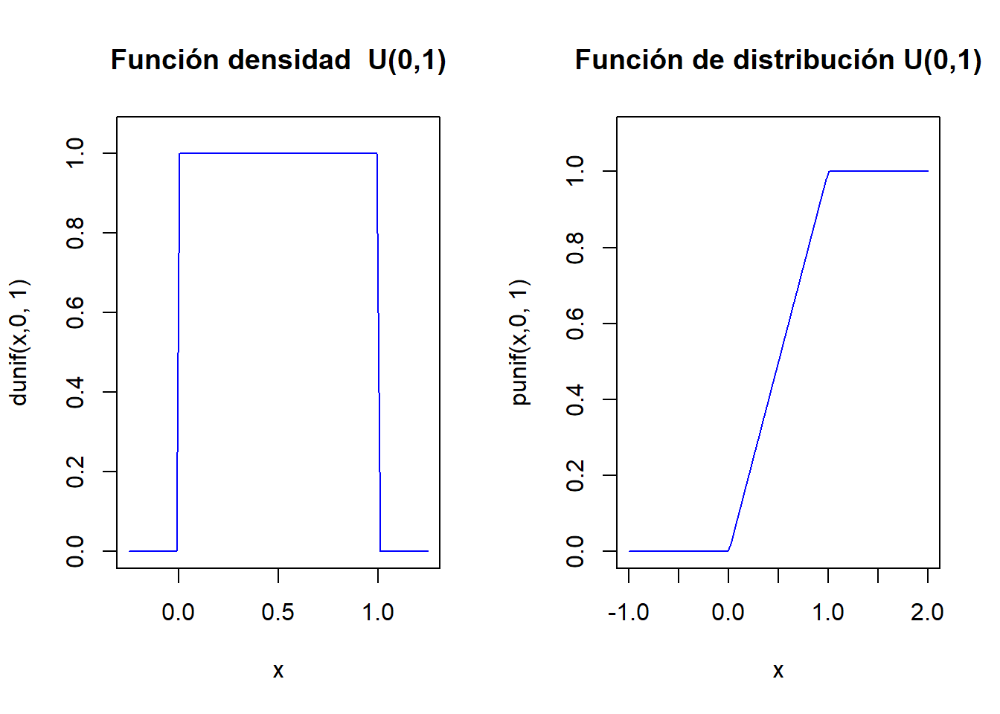

Warning: package 'reticulate' was built under R version 4.3.1
En este tema estudiaremos diversos tipos de experimentos que son muy frecuentes y algunas de las variables aleatorias asociadas a ellos.
Estas variables reciben distintos nombres que aplicaremos sin distinción al tipo de población del experimento, a la variable o a su función de probabilidad, densidad o distribución.
Empezaremos con las variables aleatorias discretas que se presentan con frecuencia, ya que están relacionadas con situaciones muy comunes como el número de caras en varios lanzamiento de una moneda, el número de veces que una maquina funciona hasta que se estropea, el número de clientes en una cola…
4.1 Distribuciones discretas
4.1.1 Distribución de Bernoulli
Consideremos un experimento con dos resultados posibles: éxito (E) y fracaso (F). El espacio de sucesos será \(\Omega=\{E,F\}\).
Supongamos que la probabilidad de éxito es \(P(E)=p\), y naturalmente \(P(F)=1-p=q\), con \(0<p<1\).
Consideremos la aplicación
\[
X:\Omega=\{E,F\}\to \mathbb{R},
\] definida por \(X(E)=1,\ X(F)=0.\)
Su función de probabilidad es: \[
P_{X}(x)=
\left\{
\begin{array}{ll} 1-p=q, & \mbox{si } x=0,\\
p, & \mbox{si } x=1,\\
0, & \mbox{en cualquier otro caso.}
\end{array}
\right.
\]
Su función de distribución es: \[
F_{X}(x)=P(X\leq x)=
\left\{
\begin{array}{ll}
0, & \mbox{si } x<0,\\
1-p=q, & \mbox{si } 0\leq x <1,\\
1, & \mbox{si } 1\leq x. \\
\end{array}
\right.
\] Bajo estas condiciones, diremos que \(X\)es una v.a. Bernoulli o que sigue una ley de distribución de probabilidad Bernoulli de parámetro \(p\).
Lo denotaremos por \(X\equiv Ber(p)\) o también \(X\equiv B(1,p).\)
A este tipo de experimentos (éxito/fracaso) se les denomina experimentos Bernoulli.
\(\left\{\begin{array}{ll} q & \mbox{si } x=0\\ p & \mbox{si } x=1\\0 & \mbox{en otro caso}\end{array}\right.\)
\(F_X(x)=P(X\leq x)=\)
\(\left\{\begin{array}{ll} 0 & \mbox{ si } x<0\\q & \mbox{ si } 0\leq x<1\\1 & \mbox{ si } 1\leq x \end{array}\right.\)
\(E(X)=p\)
\(Var(X)=p\cdot q\)
Ejemplo de Distribución Bernoulli
Veamos los cálculos básicos usando la distribución \(Ber(p=0.25)\) en R.
dbinom(0,size=1,prob=0.25)
[1] 0.75
dbinom(1,size=1,prob=0.25)
[1] 0.25
rbinom(n=20,size =1,prob=0.25)
[1] 0 0 1 0 0 0 0 0 0 0 0 0 0 0 0 0 0 0 0 0
El siguiente código dibuja las función de probabilidad y la de distribución de una \(Ber(p=0.25)\)
par(mfrow=c(1,2))plot(x=c(0,1),y=dbinom(c(0,1),size=1,prob=0.25),ylim=c(0,1),xlim=c(-1,2),xlab="x",main="Función de probabilidad\n Ber(p=0.25)")lines(x=c(0,0,1,1),y=c(0,0.75,0,0.25), type ="h", lty =2,col="blue")curve(pbinom(x,size=1,prob=0.25),xlim=c(-1,2),col="blue",main="Función de distribución\n Ber(p=0.25)")par(mfrow=c(1,1))
Gráficas interactivas \(Ber(p)\)
Para ejecutar el siguiente gráfico interactivo, solamente tienes que cargar el paquete shiny en tu ordenador y luego copiar/pegar las siguientes instrucciones. De este modo podrás observar los cambios en las distribuciones variando los parámetros.
sliderInput("p_ber", label ="Probabilidad éxito p:",min =0.01, max =0.99, value =0.25, step =0.01)renderPlot({par(mfrow=c(1,2)) p=input$p_berplot(x=c(0,1),y=dbinom(c(0,1),size=1,prob=p),ylim=c(0,1),xlim=c(-0.5,2),xlab="x",pch=21,main=paste0(c("Función de probabilidad\n Ber(p=",p,")"),collapse=""),bg="black")segments(x0=0,y0=0,x1=0,y1=1-p, col ="blue", lty =2)segments(x0=1,y0=0,x1=1,y1=p, col ="blue", lty =2)segments(x0=-1,y0=1-p,x1=0,y1=1-p, col ="blue", lty =2)segments(x0=-1,y0=p,x1=1,y1=p, col ="blue", lty =2)x=0:1y=pbinom(x,size=1,prob=p)curve(pbinom(x,size=1,prob=p),xlim=c(-1,2),col="blue",main=paste0(c("Función de distribución\n Ber(p=",p,")"),collapse="") )par(mfrow=c(1,1))})
4.1.2 Distribución binomial
Si repetimos \(n\) veces de forma independiente un experimento Bernoulli de parámetro \(p\), el espacio muestral \(\Omega\) estará formado por cadenas de \(E\)’s y \(F\)’s de longitud \(n\). Consideremos la v.a.: \[X(\overbrace{EFFF\ldots EEF}^{n})=\mbox{número de éxitos en la cadena}.\] A la variable aleatoria anterior se la conoce como distribución binomial de parámetros \(n\) y \(p\), y lo denotaremos por \(X\equiv B(n,p).\)
Función de probabilidad de una binomial
Su función de probabilidad es: \[
P_{X}(x)=\left\{
\begin{array}{ll}
{n\choose x}\cdot p^x \cdot(1-p)^{n-x}, &\mbox{ si } x=0,1,\ldots,n,\\
0, & \mbox{ en otro caso.}
\end{array}\right.
\]Función de distribución de una binomial
Su función de distribución no tiene una fórmula cerrada. Hay que acumular la función de probabilidad: \[
\begin{array}{ll}
F_{X}(x)=P(X\leq x) & = \sum_{i=0}^x P_X(i)\\
& =
\left\{
\begin{array}{ll}
0, & \mbox{ si } x\leq 0,\\\displaystyle
\sum_{i=0}^k {n\choose i}\cdot p^i \cdot (1-p)^{n-i} & \mbox{ si }
\left\{
\begin{array}{l}
k\leq x< k+1,\\
k=0,1,\ldots,n,
\end{array}
\right.\\
1, & \mbox{ si } n\leq x.
\end{array}
\right.
\end{array}
\]
Números binomiales con R
Los números binomiales calculan el número de equipos de baloncesto distintos que (\(k=5\) jugadores) se pueden hacer con 6 jugadores (\(n=6\)).
Es decir, cuántas maneras distintas hay para elegir (choose) 5 jugadores en un conjunto de 6 jugadores. Todo el mundo diría ¡¡¡6!!! Efectivamente con R es
choose(6,5)
[1] 6
Con 10 jugadores, el número de equipos de 5 distintos es bastante más grande
choose(10,5)
[1] 252
Y, por ejemplo, con un equipo de fútbol profesional que tiene en plantilla 22 jugadores (quitando los guardametas) se pueden formar ¡¡nada menos que!!
choose(22,10)
[1] 646646
un bonito número capicúa que nos da el número de equipos distintos que se pueden formar.
Obviamente se tiene que una v.a. Bernoulli es una binomial con \(n=1\): \(B(1,p)=Ber(p).\)
Ejercicio
Calculad las funciones de distribución de una binomial \(B(n=1,p=0.3)\) y comprobad que coinciden con las distribuciones de una \(Ber(p=0.3)\).
Observaciones sobre la distribución binomial
La probabilidad de fracaso se suele denotar con \(q=1-p\), sin ningún aviso adicional, con el fin de acortar y agilizar la escritura de las fórmulas.
Su función de distribución no tienen una formula general, hay que calcularla con una función de R o Python. En el siglo pasado se tabulaban en los libros de papel :-).
En el material adicional os pondremos unas tablas de esta distribución para distintos valores de \(n\) y \(p\) para que disfrutéis de tan ancestral método de cálculo.
Cualquier paquete estadístico u hoja de cálculo dispone de funciones para el cálculo de estas probabilidades, así que el uso de las tablas queda totalmente anticuado.
Esperanza de una \(B(n,p)\)
Su esperanza es: \[E(X)=\displaystyle\sum_{k=0}^n k \cdot {n \choose k }\cdot p^k\cdot q^{n-k} = n\cdot p.\] La esperanza de \(X^2\) es: \[
E(X^2)= \displaystyle\sum_{k=0}^n k^2 \cdot {n \choose k }\cdot p^k\cdot q^{n-k}= n\cdot p\cdot q+(n\cdot p)^2.
\]
Varianza de una \(B(n,p)\)
Su varianza es:
\[Var(X)=E(X^2)-\left(E(X)\right)^2=n\cdot p \cdot q=n\cdot p\cdot (1-p).\]
En temas posteriores veremos una forma sencilla del cálculo de la esperanza y varianza de una \(B(n,p)\) como las suma de \(n\) v.a. \(Ber(p)\) independientes.
Ejercicio
Justificar de forma intuitiva que si \(X_i\) con \(i=1,2,\ldots, n\) son v.a. \(Ber(p)\) independientes entonces \(X=\displaystyle\sum_{i=1}^n X_i\) sigue una distribución \(B(n,p).\)
Resumen v.a con distribución binomial \(B(n,p)\)
\(X\) binomial
\(B(n,p)\)
\(D_X=\)
\(\{0,1,\ldots n\}\)
\(P_X(x)=P(X=x)=\)
\(\left\{\begin{array}{ll}{n\choose x} p^x (1-p)^{n-x} & \mbox{si } x=0,\dots,n\\0 & \mbox{ en otro caso.}\end{array}\right.\)
\(F_X(x)=P(X\leq x)=\)
no tiene fórmula (utilizad funciones de R o Python)
\(E(X)=n\cdot p\)
\(Var(X)=n\cdot p \cdot (1-p)\)
Cálculos de la distribución Binomial con R
Veamos los cálculos básicos con funciones de R para una v.a \(X\) con distribución binomial \(B(n=10,p=0.25)\).
Si queremos calcular con R algún valor de la función de distribución, como por ejemplo \(F_X(0)=P(X\leq 0)\), tenemos que hacer:
pbinom(0,size=10,prob=0.25)
[1] 0.05631351
y si queremos por ejemplo \(F_X(4)=P(X\leq 4)\), tenemos que hacer:
pbinom(4,size=10,prob=0.25)
[1] 0.9218731
Sin embargo, si queremos calcular algún valor de la función de probabilidad, como por ejemplo \(P(X=0)\), tenemos que hacer:
dbinom(0,size=10,prob=0.25)
[1] 0.05631351
o, por ejemplo para \(P(X=4)\):
dbinom(4,size=10,prob=0.25)
[1] 0.145998
Generación de muestras aleatorias con R
Generaremos una muestra aleatoria de 100 valores de una población con distribución \(B(20,0.5)\)
El ejemplo anterior correspondería a repetir 100 veces el experimento de lanzar una moneda 20 veces y contar el número de caras.
Cálculos de la distribución Binomial con Python
Veamos los cálculos básicos con funciones de Pyython para una v.a \(X\) con distribución binomial \(B(n=10,p=0.25)\).
Primero importamos la función binom de la librería scipy.stat:
from scipy.stats import binom
En general, en el paquete scipy, la función de probabilidad se invocará con el método pmf, la de distribución con el método cdf, mientras que una muestra aleatoria que siga esta distribución, con el método rvs. En todos ellos aparecerá siempre el parámetro loc que se utiliza para desplazar el dominio de la variable aleatoria. Por ejemplo, en este caso:
binom.pmf(k, n, p, loc) = binom.pmf(k - loc, n, p)
Para calcular los valores de la función de distribución como por ejemplo \(F_X(0)=P(X\leq 0)\) y \(F_X(4)=P(X\leq 4)\) utilizamos la función cdf:
binom.cdf(0,n=10,p=0.25)
0.056313514709472684
binom.cdf(4,n=10,p=0.25)
0.9218730926513672
Notemos que al no indicar el valor de loc, se le asume que toma el valor 0.
Para calcular los valores de la función de probabilidad \(P(X=0)\) y \(P(X=4)\) utilizamos la función pmf:
binom.pmf(0,n=10,p=0.25)
0.056313514709472656
binom.pmf(4,n=10,p=0.25)
0.14599800109863284
Notemos que al no indicar el valor de loc, se le asume que toma el valor 0.
Si queremos generar una muestras aleatorias que siga una distribución binomial, podemos usar la función rvs. En este caso, generaremos una muestra aleatoria de 100 valores de una población \(B(20,0.5)\)
Notemos que la secuencia aleatoria generada no es la misma que con R. De hecho, si volvemos a ejecutar esta función obtendremos una muestra aleatoria distinta.
El siguiente código de R dibuja las función de probabilidad y la de distribución de una \(B(n=10,p=0.25)\):
par(mfrow=c(1,2))aux=rep(0,22)aux[seq(2,22,2)]=dbinom(c(0:10),size=10,prob=0.25)plot(x=c(0:10),y=dbinom(c(0:10),size=10,prob=0.25),ylim=c(0,1),xlim=c(-1,11),xlab="x",main="Función de probabilidad\n B(n=10,p=0.25)")lines(x=rep(0:10,each=2),y=aux, type ="h", lty =2,col="blue")curve(pbinom(x,size=10,prob=0.25),xlim=c(-1,11),col="blue",main="Función de distribución\n B(n=10,p=0.25)")par(mfrow=c(1,1))
Gráficas interactivas de la distribución Binomial
Para ejecutar el siguiente gráfico interactivo, solamente tienes que cargar el paquete shiny en tu ordenador y luego copiar/pegar las siguientes instrucciones. De este modo podrás observar los cambios en las distribuciones variando los parámetros.
fluidPage(fluidRow(column(6,sliderInput("n_binom", label ="Número de repeticiones n:",min =1, max =50, value =10 , step =1)),column(6,sliderInput("p_binom", label ="Probabilidad éxito p:",min =0.01, max =0.99, value =0.25, step =0.01) ) ))renderPlot({ n=input$n_binom pr=input$p_binompar(mfrow=c(1,2)) aux=rep(0,(n+1)*2) aux[seq(2,(n+1)*2,2)]=dbinom(c(0:n),size=n,prob=pr)plot(x=c(0:n),y=dbinom(c(0:n),size=n,prob=pr),ylim=c(0,1),xlim=c(-1,n+1),xlab="x",main=paste0(c("Función de probabilidad\n B(n=",n,",p=",pr,")"),collapse =""))lines(x=rep(0:n,each=2),y=aux, type ="h", lty =2,col="blue")curve(pbinom(x,size=n,p=pr),xlim=c(-1,n+1),col="blue",main=paste0(c("Función de distribución\n B(n=",n,",p=",pr,")"),collapse =""))par(mfrow=c(1,1))})
Gráficos de la distribución binomial con Python
Ejercicio
Buscad en la documentación de Python cómo se dibuja la función de probabilidad y de distribución de una binomial y recread los gráficos anteriores.
Pista: Necesitaremos investigar más librerías:
import numpy as npimport matplotlib.pyplot as plt
n, p =10, 0.25x = np.arange(binom.ppf(0.01, n, p),binom.ppf(0.99, n, p))fig =plt.figure(figsize=(5, 2.7))ax = fig.add_subplot(1,2,1)ax.plot(x, binom.pmf(x, n, p), 'bo', ms=8, label='binom pmf')ax.vlines(x, 0, binom.pmf(x, n, p), colors='b', lw=5, alpha=0.5)for tick in ax.xaxis.get_major_ticks(): tick.label.set_fontsize(5)for tick in ax.yaxis.get_major_ticks(): tick.label.set_fontsize(5) ax = fig.add_subplot(1,2,2)ax.plot(x, binom.cdf(x, n, p), 'bo', ms=8, label='binom pmf')ax.vlines(x, 0, binom.cdf(x, n, p), colors='b', lw=5, alpha=0.5)for tick in ax.xaxis.get_major_ticks(): tick.label.set_fontsize(5)for tick in ax.yaxis.get_major_ticks(): tick.label.set_fontsize(5)fig.suptitle('Distribucion Binomial')plt.show()
<string>:2: MatplotlibDeprecationWarning: The label function was deprecated in Matplotlib 3.1 and will be removed in 3.8. Use Tick.label1 instead.
Ejemplo: número de bolas rojas extraídas de una urna con reposición
Tenemos una urna con \(100\) bolas de las cuales 40 son rojas y 60 son blancas. Extraemos al azar una bola, anotamos su color y la devolvemos a (reponemos en) la urna.
Supongamos que repetimos este proceso \(n=10\) reponiendo en cada ocasión la bola extraída.
Consideremos la variable aleatoria \(X\) como el número de bolas rojas extraídas (con reposición) en \(n=10\) repeticiones del mismo experimento de Bernoulli.
Bajo estas condiciones repetimos \(n=10\) veces el mismo experimento de Bernoulli con probabilidad de éxito (sacar bola roja) \[P(Roja)=P(Éxito)=p=\frac{40}{100}=0.4.\]
Así que la variable \(X\), que es el número de bolas rojas extraídas de la urna (con reposición) en \(n=10\) ocasiones, sigue una ley binomial \(B(n=10,p=0.4).\)
Nos preguntamos:
¿Cuál es la probabilidad de que saquemos exactamente \(4\) bolas rojas?
¿Cuál es la probabilidad de que saquemos al menos \(4\) bolas rojas?
¿Cuál es la probabilidad de que saquemos menos de \(3\) bolas rojas?
¿Cuál es el valor esperado del número de bolas rojas?
¿Cuál es la desviación típica del número de bolas rojas?
Solución 1. ¿Cuál es la probabilidad de que saquemos exactamente \(4\) rojas?
Solución 4. ¿Cuál es el valor esperado del número de bolas rojas?
Como \(X\) es una \(B(n=10,p=0.4)\) sabemos que
\[E(X)=n\cdot p = 10\cdot 0.4=4.\]
Aunque en Python tenemos la función stats que nos lo calcula directamente:
print("E(X) = {m}".format(m=binom.stats(n =10, p =0.4, moments='m')))
Solución 5. ¿Cuál es la desviación típica del número de bolas rojas?
La varianza es: \[
Var(X)=n\cdot p \cdot(1-p)=10\cdot 0.4\cdot 0.6=2.4.
\] Por lo tanto, la desviación típica es:
\[\sqrt{Var(X)}=\sqrt{2.4}= 1.5491933.\]
Aunque en Python tenemos la función stats que nos lo calcula directamente:
print("Var(X) = {v}".format(v=binom.stats(n =10, p =0.4, moments='v')))
4.1.3 Distribución geométrica
Todos hemos jugado a, por ejemplo, tirar una moneda hasta que obtengamos la primera cara.
O también tirar una pelota a una canasta de baloncesto hasta obtener la primera canasta.
Desde otro punto de vista, también podemos intentar modelar el número de veces que accionamos una interruptor y la bombilla se ilumina hasta que falla.
O también, el número de veces que un cajero automático nos da dinero hasta que falla.
La modelización de este tipo de problemas se consigue con la llamada distribución geométrica.
Distribución geométrica
Repitamos un experimento Bernoulli, de parámetro \(p\), de forma independiente hasta obtener el primer éxito.
Sea \(X\) la v.a. que cuenta el número de fracasos antes del primer éxito. Por ejemplo, que hayamos tenido \(x\) fracasos será una cadena de \(x\) fracasos culminada con un éxito. Más concretamente
\[P(\overbrace{FFF\ldots F}^{x}E)=P(F)^{x}\cdot P(E)=(1-p)^{x}\cdot p=q^{x}\cdot p.\] Su función de probabilidad es: \[
P_X(x)=P(X=x)=\left\{\begin{array}{ll}
(1-p)^{x}\cdot p, & \mbox{ si } x=0,1,2,\ldots,\\
0, &\mbox{ en otro caso.}
\end{array}\right.
\] La v.a. definida anteriormente diremos que sigue una distribución geométrica de parámetro \(p\). La denotaremos por \(Ge(p)\). Su dominio será: \(D_X=\{0,1,2,\ldots\}\).
Calculemos como ejemplo P(\(X\leq 3\)). Por la propiedad de la probabilidad del suceso complementario tenemos que
\[
P(X\leq 3 )=1-P(X> 3)=1-P(X\geq 4)
\]
Efectivamente, el complementario del evento \(X\leq 3\) nos dice que hemos fracasado más de tres veces hasta conseguir el primer éxito, es decir, hemos fracasado 4 o más veces. Podemos simbolizar dicho evento de la forma siguiente: \[
\{X>3\}=\{X\geq 4\}= \{FFFF\}
\]
Ahora, al ser los intentos independientes, tenemos que: \[
\begin{array}{ll}
P(X>3) & = P(\{FFFF\})= P(F)\cdot P(F)\cdot P(F)\cdot P(F)\\
&= (1-p)\cdot (1-p)\cdot (1-p)\cdot (1-p)= (1-p)^{3+1}=(1-p)^{4}.
\end{array}
\]
El valor de la función de distribución de \(X\) en \(x=3\) será, pues: \[F_X(3)=P(X\leq 3)=1-P(X>3)=1-(1-p)^{3+1}.\] Generalizando el resultado anterior a cualquier entero positivo \(k=0,1,2,\ldots\), tenemos: \[F_X(k)=P(X\leq k)=1-(1-p)^{k+1},\mbox{ si } k=0,1,2,\ldots\]
En general, tendremos que: \[
F_X(x)=P(X\leq x)=
\left\{\begin{array}{ll}
0, & \mbox{ si } x<0,\\
1- (1-p), & \mbox{ si } k=0\leq x <1,\\
1- (1-p)^2, & \mbox{ si } k=1\leq x <2,\\
1- (1-p)^3, & \mbox{ si } k=2\leq x <3,\\
1- (1-p)^{k+1}, & \mbox{ si } \left\{ \begin{array}{l}k\leq x< k+1,\\\mbox{para } k=0,1,2,\ldots\end{array}
\right.\end{array}\right.
\] De forma más compacta, tendremos que \[
F_X(x)=P(X\leq x)=
\left\{\begin{array}{ll}
0, & \mbox{ si } x<0,\\
1- (1-p)^{k+1}, & \mbox{ si } \left\{ \begin{array}{l}k\leq x< k+1,\\\mbox{para } k=0,1,2,\ldots\end{array}
\right.\end{array}
\right.
\]
Notemos que el límite de la función de distribución es: \[
\displaystyle\lim_{k\to +\infty } F_X(k)=\lim_{k\to +\infty } 1-(1-p)^{k+1}=
1,
\] ya que \(0<1-p<1\).
Sumas derivadas series geométricas
Recordemos las propiedades siguientes del tema de variables aleatorias:
Si \(|r|<1\) también son convergentes las derivadas, respecto de \(r\), de la serie geométrica y convergen a la derivada correspondiente. Así, tenemos que: \[
\begin{array}{ll}
\left(\sum_{k=0}^{+\infty} r^k\right)' &= \sum_{k=1}^{+\infty}k\cdot
r^{k-1}\\
&= \left(\frac{1}{1-r}\right)'=\frac{1}{(1-r)^2}.\\
\left(\sum_{k=0}^{+\infty} r^k\right)^{''} &= \sum_{k=2}^{+\infty}k \cdot(k-1)\cdot r^{k-2} \\
&= \left(\frac{1}{1-r}\right)^{''}=\frac{2}{(1-r)^3}.
\end{array}
\]
Esperanza de una v.a. \(Ge(p)\)
Recordemos que \(P(X=x)=(1-p)^x\cdot p\) si \(x=0,1,2,\ldots\) y aplicado la fórmula anterior con \(r=1-p\), tenemos: \[
\begin{array}{rll}
E(X)&=&\sum_{x=0}^{+\infty} x\cdot P_x(x)=\sum_{x=0}^{+\infty} x\cdot (1-p)^x\cdot p=
p\cdot (1-p) \cdot \sum_{x=1}^{+\infty} x\cdot (1-p)^{x-1}\\
&=& p\cdot (1-p)\cdot \frac{1}{(1-(1-p))^2}=p\cdot (1-p)\cdot \frac{1}{p^2}=\frac{1-p}{p}.
\end{array}
\]
Sea \(X\) una v.a. discreta con dominio \(D_X=\{0,1,2,\ldots\}\), con \(P(X=0)=p\).
Entonces \(X\) sigue una ley \(Ge(p)\) si, y sólo si, \[
P\left(X> k+j\big| X\geq j\right)=P(X> k)
\] para todo \(k,j=0,1,2,3\ldots\).
Demostración
Si \(X\) es geométrica, entonces el lado derecho de la igualdad es
\[
P(X>k)=1-P(X\leq k)=1-\left(1-(1-p)^{k+1}\right)=(1-p)^{k+1},
\] y el lado de izquierdo es: \[
\begin{array}{rll}
P\left(X> k+j\big| X\geq j\right)&=&\frac{P\left(\{X> k+j\}\cap \{X\geq j\} \right)}{P\left(X\geq j\right)}=
\frac{P\left(X>k+j \right)}{P\left(X\geq j \right)} = \frac{1-P(X\leq k+j)}{1-P(X\leq j-1)}\\
&=& \frac{1-(1-(1-p)^{k+j+1})}{1-(1-(1-p)^{j-1+1})} =\frac{(1-p)^{k+j+1}}{(1-p)^{j}} = (1-p)^{k+1},
\end{array}
\] lo que demuestra la igualdad.
Para demostrar el recíproco, tomemos \(j=1\) y \(k\geq 0\). Entonces, por la propiedad de la pérdida de memoria: \[
P\left(X> k+1\big| X\geq 1\right)=P(X> k)
\]
Como \(P(X=0)=p\), tenemos que \(P(X \geq 1 )=1-P(X<1)=1-P(X=0)=1-p\).
Combinado las igualdades, tenemos que: \[
P\left(X> k+1\big| X\geq 1\right)=\frac{P(X>k+1, X\geq 1)}{P(X\geq 1)}=\frac{P(X>k+1)}{P(X\geq 1)}=P(X>k).
\] Así podemos poner que
\[
P(X>k+1)=(1-p)\cdot P(X>k).
\] Del mismo modo para \(j=2\), \[
P(X>k+2)=(1-p)\cdot P(X>k+1).
\] Restando la primera igualdad de la última obtenemos: \[
P(X>k+1)-P(X>k+2)=(1-p)\cdot P(X>k)-(1-p)\cdot P(X>k+1),
\] de donde operando en cada lado de la igualdad obtenemos la recurrencia: \[
[1-P(X\leq k+1)]-[1-P(X\leq k+2)]=(1-p)\cdot [P(X>k)-P(X>k+1)]
\]
\[
P(X=k+1)=(1-p)\cdot P(X=k).
\] Utilizando la recurrencia anterior, podemos calcular todas las probabilidades \(P(X=k)\) a partir de la \(P(X=0)=p\): \[
\begin{array}{rl}
P(X=0)&= p,\\
P(X=1)&=P(X=0+1)= (1-p)\cdot P(X=0) =(1-p)\cdot p,\\
P(X=2)&=P(X=1+1)= (1-p)\cdot P(X=1)=(1-p)\cdot (1-p)\cdot p=(1-p)^2\cdot p,\\
\vdots& \vdots \\
P(X=k)&=P(X=(k-1)+1)= (1-p)\cdot P(X=k-1)=(1-p)\cdot (1-p)^{k-1}\cdot p \\
& =(1-p)^{k}\cdot p,
\end{array}
\] lo que demuestra el recíproco, es decir, que \(X\) es \(Geom(p)\).
Observación: Interpretación de la propiedad de la falta de memoria
La propiedad de la falta de memoria \[
P(X> k+j\big|X \geq j)=P(X > k),
\]
significa que, aunque ya llevemos al menos \(j\) fracasos, la probabilidad de que fracasemos \(k\) veces más no disminuye, es la misma que era cuando empezamos el experimento.
A este efecto se le suele etiquetar con la frase el experimento carece de memoria o es un experimento sin memoria (Memoryless Property).
Ejemplo falta de memoria
Un ejemplo muy sencillo nos aclarará el alcance de esta propiedad es el ejercicio siguiente:
Ejercicio: la llave que abre la puerta
Tenemos un llavero con 10 llaves, sólo una de ellas abre una puerta. Cada vez que probamos una llave y falla olvidamos que llave hemos probado. ¿Cuál es la probabilidad de que si ya lo hemos intentado 5 veces necesitemos más de 4 intentos adicionales para abrir la puerta?
Tomemos \(k=4,j=5\), aplicando la propiedad de la falta de memoria
\[
P(X> 4+5/X \geq 5)=P(X > 4)
\]
Después de 5 fracasos no estamos “más cerca” de abrir la puerta. La propiedad de la falta de memoria nos dice que en después de cada intento es como si empezásemos de nuevo a abrir la puerta. Tras 5 fracasos la probabilidad de que fallemos más de 4 veces más es la misma que cuando lo intentamos la primera vez.
¿Cuál es el número esperado de fracasos hasta abrir la puerta?
La varianza es \[
Var(X)=\frac{1-p}{p^2}=\frac{1-\frac{1}{10}}{\left(\frac{1}{10}\right)^2}=\frac{\frac{9}{10}}{\frac{1}{100}}=
90.
\]
La desviación típica es \(\sqrt{90}=9.486833.\)
Ejemplo: partidos hasta que el Barça gana al Madrid
Los partidos Real Madrid vs FC Barcelona de la liga española se suelen denominar El Clásico, sean en el Bernabeu (estadio del Real Madrid) o en el Camp Nou (estadio del Barça).
Sea \(X\) la variable que cuenta el número de veces consecutivas que en un partido de fútbol de la liga el Barça no gana al Madrid sea en el Camp Nou o el Bernabeu.
Nuestra amiga Aina es muy culé (hincha del Barça) y quiere averiguar cuántos partidos consecutivos de El Clásico tiene que ver hasta ver ganar al Barça por primera vez.
Le interesa estimar cuánto le va a costar este capricho. Tendrá que comprar las entradas y pagar los viajes de Barcelona a Madrid.
En datos historicos de El clásico en la wikipedia están los datos hasta el 3 de marzo de 2019: se han jugado en total 178 Clásicos donde el Real Madrid ganó en 72 ocasiones, el Barça en 72 y empataron 34 veces.
La pregunta es: ¿Cuántos partidos se tienen que jugar de media para ver ganar al Barça por primera vez?
Con los datos anteriores, podemos estimar que la probabilidad de que el Barça gane un clásico cualquiera es: \[P(\mbox{Barça})=\frac{72}{178}=0.4045.\]
Por tanto, podemos modelar la variable \(X\) con una ley geométrica con probabilidad de éxito \(p=P(\mbox{Barça})=\frac{72}{178}.\)
El número de partidos esperado para que el Barça gane por primera vez es:
\[E(X)=\frac{1-p}{p}=\frac{1-0.4045}{0.4045}=1.4722,\] con una varianza de: \[Var(X)=\frac{1-p}{p^2}=\frac{1-0.4045}{0.4045^2}=3.6397\] y desviación típica: \[\sqrt{3.6397}=1.9078.\]
Cálculos con R
Veamos los cálculos básicos con R para la distribución geométrica \(Ge(p=0.25)\). R implementa la geométrica que cuenta el número de fracasos, \(P(X=0)=(1-0.25)^0\cdot 0.25^1=0.25\):
par(mfrow=c(1,2))x=c(0:10)plot(x=x,y=dgeom(x,prob=0.25),ylim=c(0,1),xlim=c(-1,11),xlab="x",main="Función de probabilidad\n Ge(p=0.25)")lines(x=rep(0:10,each=2),y=aux, type ="h", lty =2,col="blue")aux0=dgeom(c(0:10),prob=0.25)ceros=rep(0,21)cerosaux=cerosaux[2*(c(1:11))]<-aux0curve(pgeom(x,prob=0.25),xlim=c(-1,10),col="blue",main="Función de distribución\n Ge(p=0.25)")par(mfrow=c(1,1))
Gráficas interactivas de la distribución Geométrica
Para ejecutar el siguiente gráfico interactivo, solamente tienes que cargar el paquete shiny en tu ordenador y luego copiar/pegar las siguientes instrucciones. De este modo podrás observar los cambios en las distribuciones variando los parámetros.
sliderInput("p_geom", label ="Probabilidad de éxito:",min =0.01, max =0.99, value =0.25 , step =0.01)renderPlot({par(mfrow=c(1,2)) p=input$p_geom n=30 aux=rep(0,(n+1)*2) aux[seq(2,(n+1)*2,2)]=dgeom(c(0:n),prob=p)plot(x=c(0:n),y=dgeom(c(0:n),prob=p),ylim=c(0,1),xlim=c(-1,n+1),xlab="x",main=paste0(c("Función de probabilidad\n Ge(p=",p,")"),collapse =""))lines(x=rep(0:n,each=2),y=aux, type ="h", lty =2,col="blue")curve(pgeom(x,prob=p),xlim=c(-1,n+1),col="blue",main=paste0(c("Función de distribución\n Ge(p=",p,")"),collapse =""))par(mfrow=c(1,1))})
Cálculos con Python
Veamos los cálculos básicos con python para la distribución geométrica \(Ge(p=0.25)\). scipy.stats implementa la distribución geométrica que cuenta el número intentos, así que empieza en 1.
Cargamos la función de la librería
from scipy.stats import geom
La función de probabilidad es geom.pmf(x,p,loc=0)=geom.pmf(x,p). Es una geométrica que cuenta el número de intentos para obtener el primer éxito y el valor por defecto del último parámetro es loc=0.
Si queremos la que cuenta el número de fracasos para obtener el primer éxito (la geométrica que empieza en 0) tenemos que usar geom.pmf(x,p,loc=-1).
Es decir geom.pmf(x,p,loc=-1)=geom.pmf(x-1,p,loc=0)
Veamos pues los cálculos para la \(Ge(p)\) que empieza en \(0\).
Comprobad que las medias y las varianzas calculadas en el código anterior corresponden a una \(Ge(p=0.3)\) empezando en \(1\) y a una \(Ge(p=0.3)\) empezando en \(0\).
Supongamos que disponemos de 10 llaves distintas y tenemos que abrir una puerta con dos cerraduras.
Comenzamos por la primera cerradura, de tal forma que cada vez olvidamos qué llave hemos probado.
Una vez abierta la primera cerradura probamos de igual forma con la segunda hasta que también la abrimos.
Sea \(X\) la v.a. que cuenta el número de fracasos hasta abrir la puerta.
Acertar una llave de la puerta es un experimento Bernoulli con probabilidad de éxito \(p=0.1\). Lo repetiremos hasta obtener 2 éxitos.
En general, tendremos un experimento de Bernoulli con probabilidad de éxito \(0<p<1\) tal que:
Repetimos el experimento hasta obtener el \(n\)-ésimo éxito ¡¡abrir la maldita puerta!!.
Sea \(X\) la v.a. que cuenta el número fallos hasta abrir la puerta, es decir, hasta conseguir el \(n\)-ésimo éxito. Notemos que no contamos los éxitos, solo contamos los fracasos.
Si representamos como es habitual un suceso como una cadena de F’s y E’s, para \(n=2\), algunos sucesos elementales serán: \[\{EE,FEE,EFE, FFEE,FEFE,EFFE,FFFEE,FFEFE,FEFFE,EFFFE\}.\]
Calculemos algunas probabilidades para \(n=2\): \[
\begin{array}{rl}
P(X=0) & =P(\{EE\})=p^2, \\
P(X=1) & =P(\{FEE,EFE\})=2\cdot (1-p)\cdot p^2, \\
P(X=2) & =P(\{FFEE,FEFE,EFFE\})=3\cdot (1-p) 2\cdot p^2, \\
P(X=3) & =P(\{FFFEE,FFEFE,FEFFE,EFFFE\})=4\cdot (1-p)^3\cdot p^2.
\end{array}
\] En general, su función de probabilidad es \[
P_{X}(k)=P(X=k)=\left\{\begin{array}{ll}
{{k+n-1}\choose{n-1}} \cdot (1-p)^{k}\cdot p^n, & \mbox{si } k=0,1,\ldots\\
0, & \mbox{en otro caso.}\end{array}\right.
\]
Una v.a. con este tipo de distribución recibe el nombre de binomial negativa y la denotaremos por \(BN(n,p)\).
Notemos que \(BN(1,p)=Ge(p)\).
Demostración
Justifiquemos el resultado. Sea \(X\) una \(BN(n,p)\) y sea \(k=0,1,2,\ldots\)
\[P(X=k)=P(\mbox{Todas las cadenas de E's y F' con $k$ F, con $n$ E y acabadas en E})\]
De estas cadenas hay tantas como maneras de elegir de entre las \(k+n-1\) primeras posiciones \(n-1\) para colocar los éxitos. Esta cantidad es el número binomial \({k+n-1\choose n-1}\).
Números binomiales negativos
Dados dos enteros positivos \(n\) y \(k\), se define el número binomial negativo como: \[\binom{-n}{k}=\frac{(-n)(-n-1)\cdots (-n-k+1)}{k!}.\] Los números binomiales negativos generalizan la fórmula de Newton para exponentes negativos: \[
(t+1)^{-n}=\sum_{k=0}^{+\infty}\left(\begin{array}{c} -n
\\ k\end{array}\right) t^{k}.
\]
R usa la función choose para calcular números binomiales, sean negativos o no. Veámoslo con un ejemplo: \[
{-6\choose 4}=\frac{-6\cdot (-6-1)\cdot \cdot (-6-2)\cdot (-6-3) }{4!}= \frac{-6\cdot(-7)\cdot (-8)\cdot (-9)}{24}
= \frac{3024}{24}=126.
\] Si realizamos el cálculo con R obtenemos el mismo resultado:
Por último, la varianza es: \[
Var(X)=E(X^2)-E(X)^2=n\cdot \frac{1-p}{p^2}+\left(n\cdot \frac{1-p}{p}\right)^2-\left(n\cdot \frac{1-p}{p}\right)^2=
n\cdot \frac{1-p}{p^2},
\] y la desviación típica es:
\[\sqrt{Var(X)} = \frac{\sqrt{n(1-p)}}{p}.\]
Resumen Binomial Negativa \(BN(n,p)\)
\(X = BN(n,p)\)
Número de fracasos antes de conseguir el \(n\)-ésimo éxito. Probabilidad de éxito \(p\)
\(\begin{array}{l}\left\{\begin{array}{ll} 0, & \mbox{si } x<0\\\displaystyle\sum_{i=0}^{k} P(X=i) & \mbox{si }\left\{\begin{array}{l}k\leq x< k+1,\\k=0,1,2,\ldots\end{array}\right.\end{array}\right.\end{array}\) Calcular la suma o utilizar funciones de R o Python.
\(E(X)=n\cdot\frac{1-p}{p}\)
\(Var(X)=n\cdot \frac{1-p}{p^2}\)
Ejercicio: Puerta con dos cerraduras
Recordemos nuestra puerta con dos cerraduras que se abren secuencialmente. Tenemos un manojo de 10 llaves casi idénticas de manera que cada vez que probamos una llave olvidamos qué llave hemos usado.
Sea \(X\) la v.a que nos da el número de intentos fallidos hasta abrir abrir la puerta.
Estamos interesado en modelar este problema. La preguntas son:
¿Cuál es la distribución de probabilidad de \(X\) la v.a que nos da el número fallos hasta abrir la puerta?
¿Cuál es la función de probabilidad y de distribución de \(X\)?
¿Cuál es la probabilidad de fallar exactamente 5 veces antes de abrir la puerta?
¿Cuál es la probabilidad de fallar más de 4?
¿Cuál es el número esperado de fallos? ¿Y su desviación típica?
Solución 1. ¿Cuál es la distribución de probabilidad de \(X\) la v.a que nos da el número fallos hasta abrir la puerta?
Bajo estados condiciones tenemos que la probabilidad de “éxito” de cada intento es \(p=\frac{1}{10}=0.1\). Como cada vez olvidamos qué llave hemos probado, cada intento será independiente del anterior.
Así que la variable \(X\) que queremos modelar cuenta el número de fallos de repeticiones sucesivas e independientes de un experimento \(Ber(p=0.1)\) hasta conseguir 2 éxitos en un experimento.
Por lo tanto podemos asegurar que \(X\) sigue un distribución \(BN(n=2,p=0.1).\)
Solución 2. ¿Cuál es la función de probabilidad y de distribución de \(X\)?
En general la función de probabilidad de una \(BN(n,p)\) es
\[
P_X(X=k)=
\left\{
\begin{array}{cc}
{k+n-1\choose n-1} \cdot (1-p)^{k}\cdot p^n, & \mbox{si } k=0,1,\ldots \\ 0, & \mbox{en otro caso.}\end{array}\right.
\] Si aplicamos la expresión anterior para \(n=2\) y \(p=0.1\), obtenemos:
\[
P_X(X=k)=
\left\{
\begin{array}{cc}
{k+2-1\choose 2-1} \cdot 0.9^{k}\cdot 0.1^2, & \mbox{si } k=0,1,2,\ldots \\ 0, & \mbox{en otro caso.}\end{array}\right.
\] Simplificando, \[
P_X(X=k)=P(X=k)=
\left\{
\begin{array}{cc}
0.01\cdot (k+1)\cdot 0.9^{k}, & \mbox{si } k=0,1,2,\ldots \\ 0 & \mbox{en otro caso.}\end{array}\right.
\] La función de distribución en general es
Solución 3. ¿Cuál es la probabilidad de fallar exactamente 5 veces antes de abrir la puerta? \[
P(X=5)= 0.01\cdot (5+1) \cdot 0.9^{5}= 0.06 \cdot 0.9^{5}= 0.0354294.
\]
Solución 4. ¿Cuál es la probabilidad de fallar más de 4?
La varianza será: \[
Var(X)=n\cdot\frac{1-p}{p^2}=2 \cdot \frac{1-0.1}{0.1^2}=180.
\] La varianza de \(X\) es 180 y su desviación típica \(\sqrt{180}=13.41641.\)
Cálculos con R
La función de R que calcula la función de probabilidad de la binomial negativa con sus parámetros básicos es:
dnbinom(x, size, prob,...)`
donde size (\(n\)) es el número de éxitos y prob (\(p\)), la probabilidad de éxito.
Así, en el ejemplo de la puerta con dos cerraduras, \(X\) es una \(BN(n=size=2,p=prob=0.1)\). Por ejemplo, \(P(X=5)\) que hemos calculado en el ejemplo anterior, vale:
dnbinom(5,size=2,p=0.1)
[1] 0.0354294
De forma similar calculamos calculamos \(P(X\leq 4)\), \(P(X>4)=1-P(X\leq 4)\) y \(P(X>4)\).
pnbinom(4,size=2,p=0.1)
[1] 0.114265
1-pnbinom(4,size=2,p=0.1)
[1] 0.885735
pnbinom(4,size=2,p=0.1,lower.tail=FALSE)
[1] 0.885735
Cálculos con Python
La función con Python es nbinom.pmf(k, n, p, loc). Hay que cargarla desde scpi.stats
from scipy.stats import nbinom
Recordemos que de nuevo se cumple que
nbinom.pmf(k, n, p, loc) = nbinom.pmf(k-loc, n, p)`
nbinom.pmf(k=5,n=2,p=0.1)
0.0354294
nbinom.pmf(k=5,n=2,p=0.1,loc=0)
0.0354294
nbinom.cdf(k=4,n=2,p=0.1)
0.11426500000000002
1-nbinom.cdf(k=4,n=2,p=0.1)
0.8857349999999999
Generemos 100 observaciones aleatorias de una \(BN(n=2,0.1)\). Es decir serán las veces que hemos fallado hasta abrir la puerta 100 veces.
La esperanza y la varianzade una \(BN(n=2,0.1)\) valen:
n, p=2,0.1params = nbinom.stats(n,p,moments='mv')print("E(X)={m}".format(m=params[0]))
E(X)=18.0
print("Var(X)={v}".format(v=params[1]))
Var(X)=179.99999999999997
Gráficas de la binomial negativa con R
El siguiente código de R dibuja las función de probabilidad y la de distribución de una \(BN(n=2,p=0.1)\)
par(mfrow=c(1,2))aux=rep(0,22)aux[seq(2,22,2)]=dnbinom(c(0:10),size=2,prob=0.1)plot(x=c(0:10),y=dnbinom(c(0:10),size=2,prob=0.1),ylim=c(0,1),xlim=c(-1,11),xlab="x",main="Función de probabilidad\n BN(n=2,p=0.1)")lines(x=rep(0:10,each=2),y=aux, type ="h", lty =2,col="blue")curve(pnbinom(x,size=2,prob=0,1),xlim=c(-1,11),col="blue",main="Función de distribución\n BN(n=2,p=0.1)")par(mfrow=c(1,1))
Gráficas interactivas binomial negativa
Para ejecutar el siguiente gráfico interactivo, solamente tienes que cargar el paquete shiny en tu ordenador y luego copiar/pegar las siguientes instrucciones. De este modo podrás observar los cambios en las distribuciones variando los parámetros.
fluidPage(fluidRow(column(6,sliderInput("n_nbinom", label ="Número de éxitos n:",min =1, max =50, value =20 , step =1)),column(6,sliderInput("p_nbinom", label ="Probabilidad de un éxito p:",min =0.01, max =0.99, value =0.8, step =0.01) ) ))renderPlot({ n=input$n_nbinom pr=input$p_nbinompar(mfrow=c(1,2)) aux=rep(0,(n+1)*2) aux[seq(2,(n+1)*2,2)]=dnbinom(c(0:n),size=n,prob=pr)plot(x=c(0:n),y=dnbinom(c(0:n),size=n,prob=pr),ylim=c(0,1),xlim=c(-1,n+1),xlab="x",main=paste0(c("Función de probabilidad\n BN(n=",n,",p=",pr,")"),collapse =""))lines(x=rep(0:n,each=2),y=aux, type ="h", lty =2,col="blue")curve(pnbinom(x,size=n,p=pr),xlim=c(-1,n+1),col="blue",main=paste0(c("Función de distribución\n BN(n=",n,",p=",pr,")"),collapse =""))par(mfrow=c(1,1))})
Ejercicio
Buscad en los manuales de Python cómo se dibuja la función de probabilidad y de distribución de una binomial. negativa
Necesitamos de nuevo más librerías
import numpy as npfrom scipy.stats import nbinomimport matplotlib.pyplot as plt
n, p =10, 0.25x = np.arange(0,nbinom.ppf(0.99, n, p))fig =plt.figure(figsize=(5, 2.7))ax = fig.add_subplot(1,2,1)ax.plot(x, nbinom.pmf(x, n, p), 'bo', ms=5, label='nbinom pmf')ax.vlines(x, 0, nbinom.pmf(x, n, p), colors='b', lw=2, alpha=0.5)for tick in ax.xaxis.get_major_ticks(): tick.label.set_fontsize(5)for tick in ax.yaxis.get_major_ticks(): tick.label.set_fontsize(5) ax = fig.add_subplot(1,2,2)ax.plot(x, nbinom.cdf(x, n, p), 'bo', ms=5, label='nbinom pmf')ax.vlines(x, 0, nbinom.cdf(x, n, p), colors='b', lw=2, alpha=0.5)for tick in ax.xaxis.get_major_ticks(): tick.label.set_fontsize(5)for tick in ax.yaxis.get_major_ticks(): tick.label.set_fontsize(5)fig.suptitle('Distribucion Binomial Negativa')plt.show()
<string>:2: MatplotlibDeprecationWarning: The label function was deprecated in Matplotlib 3.1 and will be removed in 3.8. Use Tick.label1 instead.
Ejercicio: acceso aleatorio a un sistema con triple clave
Supongamos que tenemos un sistema informático que tiene un programa de seguridad que genera accesos con claves de 3 dígitos \(000,001,\ldots 999\). En total tenemos 1000 posibilidades.
Como una clave de tres dígitos es fácil de romper, proponemos considerar tres claves consecutivas de acceso al sistema, cada una de 3 dígitos.
Para acceder al sistema hay que dar las tres claves de forma consecutiva y por orden.
Es decir hasta que no averiguamos la primera clave no pasamos a la segunda clave.
Supongamos que cada vez que ponemos las dos claves olvidamos el resultado y seguimos poniendo claves al azar hasta adivinar la contraseña.
Así hasta conseguir entrar en el sistema.
Sea \(X\) la v.a que nos da el número de fallos antes de entrar en el sistema.
Estamos interesados en modelar este problema. La preguntas son:
¿Cuál es la distribución de probabilidad de \(X\), la v.a que nos da el número de fallos antes de acceder al sistema.
¿Cuál es la función de probabilidad y de distribución del \(X\)?
¿Cuál es la probabilidad de fallar 150 veces antes de acceder en el sistema?
¿Cuál es la probabilidad de fallar más de 150 veces antes de entrar en el sistema?
¿Cuál es el número esperado de fallos antes de acceder al sistema? ¿Y su varianza?
Solución 1. ¿Cuál es la distribución de probabilidad de \(X\), la v.a que nos da el número de fallos antes de acceder al sistema?
Bajo estas dos condiciones tenemos que la probabilidad de “éxito” de cada intento es \(p=\frac{1}{1000}=0.001\). Y como cada vez olvidamos los dígitos cada intento será independiente del anterior.
Así que la variable \(X\) cuenta el número de fracasos independientes hasta conseguir 3 éxitos en un experimento \(Ber(p=0.001)\), por lo tanto \(X\) sigue un distribución \(BN(n=3,p=0.001).\)
Solución 2. ¿Cuál es la función de probabilidad y de distribución del \(X\)
En general la función de probabilidad de una \(BN(n,p)\) es:
\[
P_X(X=x)=P(X=x)=
\left\{
\begin{array}{cc}
{x+n-1\choose n-1} \cdot (1-p)^{x}\cdot p^n, & \mbox{si } x=0,1,\ldots \\ 0, & \mbox{en otro caso.}\end{array}\right.
\] En particular la función de probabilidad de una \(BN(n=3,p=0.001)\) es
Solución 3. ¿Cuál es la probabilidad de fallar 150 veces antes de acceder en el sistema?
Nos piden calcular la probabilidad siguiente: \[
P(X=150)= {152\choose 2} \cdot 0.999^{150}\cdot 0.001^3.
\] Realizaremos el cálculo anterior con ayuda de R:
choose(152,2)*0.999^150*0.001^3
[1] 9.876743e-06
o, usando la función de R que nos calcula la función de probabilidad:
dnbinom(150,size=3,p=0.001)
[1] 9.876743e-06
Si queremos calcular la probabilidad anterior con Python, tenemos que hacer:
from scipy.special import binombinom(152,2)*0.999**150*0.001**3
9.876743459670526e-06
nbinom.pmf(150,n=3,p=0.001)
9.876743459670532e-06
Vemos que es muy improbable fallar 150 veces antes de acceder al sistema.
Solución 4. ¿Cuál es la probabilidad de fallar más de 150 veces antes de entrar en el sistema?
Nos piden calcular la probabilidad siguiente: \[P(X>150)=1-P(X\leq 150).\]
Calculemos \(P(X\leq 150)\)\[
\begin{array}{rl}
P(X\leq 150) &= P(X=0)+P(X=1)+P(X=2)+\ldots+P(X=150) \\ & = \sum\limits_{k=0}^{150} {k+3-1\choose 3-1} \cdot (0.999)^{k}\cdot 0.001^3= \ldots = 5.2320035\times 10^{-4}
\end{array}
\] Si hacemos el cálculo con R, obtenemos:
pnbinom(150,3,0.001)
[1] 0.0005232003
Si lo hacemos en Python, obtenemos el mismo resultado:
nbinom.cdf(150,n=3,p=0.001)
0.0005232003490824064
El valor pedido será pues: \[
P(X>150)=1-P(X\leq 150)=1-5.2320035\times 10^{-4}=0.9994768.
\] Vemos que es muy probable que fallemos más de 150 veces antes de entrar en el sistema.
Solución 5. ¿Cuál es el número esperado de fallos antes de acceder al sistema? ¿Y su varianza?
Ejercicio: ¿Tres claves de tres dígitos o una de 9 dígitos?
Supongamos que ponemos una sola clave de 9 dígitos. Estudiemos en este caso la variable aleatoria que da el número de fallos antes de entrar en el sistema y comparemos los resultados.
Si seguimos suponiendo que cada vez ponemos la contraseña al azar, pero esta vez con una clave de 9 dígitos. La probabilidad de éxito será ahora \(p=\frac{1}{10^{9}}\).
Si llamamos \(X_9\) a la variable aleatoria que nos da el número de fallos antes de entra en el sistema seguirá una distribución \(Ge(p=\frac{1}{10^9}=0.000000001)\).
\(1000 000 000\) son 1000 millones de fallos esperados hasta abrir la puerta.
Recordemos que con tres contraseñas de 3 dígitos el valor esperado de fallos era:
\[3\cdot \frac{1-0.001}{0.001}=2997.\]
Por lo tanto, desde el punto de vista de la seguridad, es mejor una clave larga de 9 dígitos que tres cortas si escribimos las contraseñas al azar.
4.1.5 Distribución de Poisson
Diremos que una v.a. discreta \(X\) con \(X(\Omega)=\mathbb{N}\) tiene distribución de Poisson con parámetro \(\lambda>0\), y lo denotaremos por \(Po(\lambda)\) si su función de probabilidad es:
\[
P_{X}(x)=P(X=x)=
\left\{\begin{array}{ll}
\frac{\lambda^x}{x!} e^{-\lambda},& \mbox{ si } x=0,1,\ldots\\
0, & \mbox{en otro caso.}\end{array}\right.
\]
Usando que el desarrollo en serie de Taylor de la función exponencial es \[
e^{\lambda}=\sum_{x=0}^{+\infty} \frac{\lambda^x}{x!},
\] es fácil comprobar que la suma de la función de probabilidad en todos los valores del dominio de \(X\), o sea, los enteros positivos, vale 1.
Además, recordemos que dado \(x\in\mathbb{R}-\{0\}\) se tiene que
Usando la expresión anterior para \(x=-\lambda\), tenemos: \[
\lim_{n\to\infty} \left(1-\frac{\lambda}{n}\right)^n=\lim_{n\to\infty} \left(1+\frac{-\lambda}{n}\right)^n=e^{-\lambda}.
\]
La distribución de Poisson como “límite” de una binomial
La distribución de Poisson (Siméon Denis Poisson) aparece en el conteo de determinados eventos que se producen en un intervalo de tiempo o en el espacio.
Supongamos que nuestra variable de interés es \(X\), el número de eventos en el intervalo de tiempo \((0,t]\), como por ejemplo el número de llamadas a un call center en una hora donde suponemos que se cumplen las siguientes condiciones:
El número promedio de eventos en el intervalo \((0,t]\) es \(\lambda>0\).
Es posible dividir el intervalo de tiempo en un gran número de subintervalos (denotemos por \(n\) al número de intervalos) de forma que:
La probabilidad de que se produzcan dos o más eventos en un subintervalo es despreciable.
El número de ocurrencias de eventos en un intervalo es independiente del número de ocurrencias en otro intervalo.
La probabilidad de que un evento ocurra en un subintervalo es \(p_n=\frac{\lambda}{n}\)·
Bajo estas condiciones, podemos considerar que el número de eventos en el intervalo \((0,t]\) será el número de “éxitos” en \(n\) repeticiones independientes de un proceso Bernoulli de parámetro \(p_n\).
Entonces si \(n\to\infty\) y \(p_n\cdot n\) se mantiene igual a \(\lambda\), resulta que la función de probabilidad de \(X_n\) se puede escribir como
Calculemos el límite de algunos de los factores de la expresión
\[
\begin{array}{rl}
\lim\limits_{n\to \infty}\frac{n!}{(n-k)!\cdot n^k} & = \lim\limits_{n\to \infty}\frac{n\cdot (n-1)\cdots (n-k-1)}{n^k}
=\lim\limits_{n\to \infty}\frac{n^{k}+\cdots}{n^k}=1, \\
\lim\limits_{n\to \infty} \left(1-\frac{\lambda}{n}\right)^{n} & =e^{-\lambda},\\
\lim\limits_{n\to \infty} \left(1-\frac{\lambda}{n}\right)^{-k} & =\lim\limits_{n\to \infty} 1^{-k}=\lim\limits_{n\to \infty} 1=1,
\end{array}
\] donde en el último límite, hemos tenido en cuenta que \(k\) es constante.
Usando las expresiones halladas anteriormente, tenemos que el límite de la función de probabilidad de la variable \(X_n\) tiende a la función de probabilidad de la variable de Poisson de parámetro \(\lambda\):
\[
\displaystyle\lim_{n\to\infty} P(X_n=k)=
\lim_{n\to\infty} \left(\begin{array}{c} n\\ k\end{array}\right)
\cdot p_n^k \cdot (1-p_n)^{n-k}= \frac{\lambda^k}{k!}\cdot 1 \cdot e^{-\lambda}\cdot 1=\frac{\lambda^k}{k!}\cdot e^{-\lambda}.
\] Usando que las variables \(X_n\) tienen distribución \(B(n,p_n=\frac{\lambda}{n})\), tenemos que el límite de binomiales de parámetros \(n\) y \(p_n=\frac{\lambda}{n}\) es una distribución de Poisson de parámetro \(\lambda\), \(Po(\lambda)\).
Procesos de Poisson
Lo interesante de las variables Poisson es que podemos modificar (si el modelo lo permite) el intervalo de tiempo \((0,t]\) en el que contamos los eventos, siempre y cuando se cumplan las condiciones 1 y 2 enunciadas anteriormente en el nuevo intervalo de tiempo.
En general, podemos afirmar si la variable es Poisson en \((0,t]\), también lo será en cualquier subintervalo \((0,t']\) para todo \(t'\) tal que \(0<t'<t\).
De esta forma, podremos definir una serie de variables \(X_t\) de distribución \(Po(\lambda\cdot t)\).
Definición de procesos de Poisson
Consideremos un experimento Poisson con \(\lambda\) igual al promedio de eventos en una unidad de tiempo (u.t.).
Si \(t\) es una cantidad de tiempo en u.t., la v.a. \(X_{t}\) definida como el número de eventos en el intervalo \((0,t]\) es una \(Po(\lambda\cdot t)\).
El conjunto de variables \(\{X_t\}_{t>0}\) recibe el nombre de proceso de Poisson.
Resumen de la distribución de Poisson \(X\equiv Po(\lambda)\)
\(X\) Poisson
\(\lambda\)
\(D_X=\)
\(\{0,1,\ldots \}\)
\(P_X(x)=P(X=x)=\)
\(\left\{\begin{array}{ll} \frac{\lambda^x}{x!}e^{-\lambda}, & \mbox{ si } x=0,1,\ldots\\ 0, & \mbox{ en otro caso.}\end{array}\right.\)
\(F_X(x)=P(X\leq x)=\sum_{i=0}^kP(X = i)=\)
\(\begin{array}{l}\left\{\begin{array}{ll} 0, & \mbox{si } x<0,\\\displaystyle\sum_{i=0}^{k} \frac{\lambda^i}{i!}\cdot e^{-\lambda}, & \mbox{si }\left\{\begin{array}{l}k\leq x< k+1,\\k=0,1,2,\ldots\end{array}\right.\end{array}\right.\end{array}\) Calcular la suma o utilizar funciones de R o Python.
\(E(X)=\lambda\)
\(Var(X)=\lambda\)
Resumen proceso Poisson \(X_t\equiv Po(\lambda\cdot t)\)
\(X_t\)\(Po(\lambda\cdot t)\)
\(\lambda\) promedio por u.t.
\(D_X=\)
\(\{0,1,\ldots \}\)
\(P_X(x)=P(X=x)=\)
\(\left\{\begin{array}{ll} \frac{(\lambda\cdot t)^x}{x!}e^{-\lambda\cdot t} & \mbox{ si } x=0,1,\ldots\\ 0 & \mbox{ en otro caso.}\end{array}\right.\)
\(F_X(x)=P(X\leq X)=\sum_{i=0}^kP(X = i)=\)
\(\begin{array}{l}\left\{\begin{array}{ll} 0, & \mbox{si } x<0,\\\displaystyle\sum_{i=0}^{k} \frac{(\lambda\cdot t)^i}{i!}\cdot e^{-\lambda\cdot t}, & \mbox{si }\left\{\begin{array}{l}k\leq x< k+1,\\k=0,1,2,\ldots\end{array}\right.\end{array}\right.\end{array}\) Calcular la suma o utilizar funciones de R o Python.
\(E(X)=\lambda\cdot t\)
\(Var(X)=\lambda\cdot t\)
Aproximación de la distribución binomial por la Poisson
Dada una variable aleatoria de distribución \(B(n,p)\), si \(n\) es grande y \(p\) es pequeño podemos aproximar la distribución anterior por una distribución Poisson de parámetro \(\lambda=n\cdot p\), \(Po(\lambda = n\cdot p)\).
Un criterio para decidir que la aproximación anterior es buena es que \(n\geq 20\), o mejor, \(n\geq 30\), \(n\cdot p < 10\) y \(p\leq 0.05.\)
La aproximación de la función de probabilidad de una variable binomial a una variable de Poisson es óptima en los valores cercanos a \(E(X)=\lambda\).
Gráficos de la aproximación binomial a la de Poisson
Suponemos que estamos en las condiciones anteriores: \(n\geq 20\), \(n\cdot p < 10\), \(p\leq 0.05\).
Para ejecutar el siguiente gráfico interactivo, solamente tienes que cargar el paquete shiny en tu ordenador y luego copiar/pegar las siguientes instrucciones. De este modo podrás observar los cambios en las distribuciones variando los parámetros.
fluidPage(fluidRow(column(6,sliderInput("n_binomP", label ="Número de repeticiones n:",min =1, max =100, value =20 , step =1)),column(6,sliderInput("p_binomP", label ="Probabilidad éxito p:",min =0.001, max =0.9, value =0.05, step =0.001) ) ))renderPlot({ n=input$n_binomP pr=input$p_binomPpar(mfrow=c(1,2)) aux=rep(0,(n+1)*2) aux[seq(2,(n+1)*2,2)]=dbinom(c(0:n),size=n,prob=pr)plot(x=c(0:n),y=dbinom(c(0:n),size=n,prob=pr),ylim=c(0,0.6),xlim=c(-1,n+1),xlab="x",main=paste0(c("Funciones de probabilidad\n B(n=",n,",p=",pr,"), Po(lambda=",n*pr,")"),collapse =""))lines(x=rep(0:n,each=2),y=aux,pch=21, type ="h", lty =2,col="blue") aux=rep(0,(n+1)*2) aux[seq(2,(n+1)*2,2)]=dpois(c(0:n),n*pr)points(x=c(0:n),y=dpois(c(0:n),n*pr),ylim=c(0,0.6),xlim=c(-1,n+1),xlab="x",pch=25,col="red")lines(x=rep(0:n,each=2),y=aux, type ="h", lty =3,col="red")legend("topleft",legend=c("Binomial","Poisson"),col=c("blue","red"), pch=c(21,25),lty=c(2,3),bty ="n")curve(pbinom(x,size=n,p=pr),xlim=c(-1,n+1),col="blue",main=paste0(c("Funciones de distribución \n B(n=",n,",p=",pr,"), Po(lambda=",n*pr,")"),collapse =""))curve(ppois(x,n*pr),xlim=c(-1,n+1),col="red",add=TRUE)if(all(c(n>=20,n*pr<10,pr<=0.05))){aux_l="Condición\n TRUE"} else {aux_l="Condición\n FALSE"}legend("topleft",legend=c(aux_l,paste0("n=",n),paste0("n*p=",n*pr),paste0("p=",pr)),bg="transparent",cex=0.8,bty ="n")par(mfrow=c(1,1))})
Ejemplo de una distribución de Poisson \(Po(\lambda)\): trampa para insectos
Consideremos la v.a. \(X\) que cuenta el número de insectos caídos en la trampa en una hora. Supongamos que el número promedio de insectos que captura la trampa en una hora es \(E(X)=20\) y que podemos admitir que \(X\) sigue una ley de probabilidad \(Po(\lambda=20)\).
Nos piden
Comentar de forma breve si se cumplen intuitivamente las condiciones para tener una distribución Poisson.
Escribir de forma explícita la función de probabilidad y de distribución de \(X\).
Calculad la probabilidad de que en una hora caigan en la trampa exactamente 21 insectos.
Calculad la probabilidad de que en una hora caigan en la trampa al menos 6 insectos.
¿Cuál es el valor esperando, la varianza y la desviación típica de \(X\)?
Solución 1. Comentar de forma breve si se cumplen intuitivamente las condiciones para tener una distribución Poisson.
El número promedio de eventos en el intervalo \((0,1]\), una hora es \(\lambda=20>0\).
Es posible dividir el intervalo de tiempo de una hora en un gran número de subintervalos (denotemos por \(n\) al número de intervalos) de forma que:
La probabilidad de que se produzcan dos o más electrocuciones un subintervalo es despreciable. No es posible que dos mosquitos se electrocuten al mismo tiempo.
El número de ocurrencias, electrocuciones de insectos, en un intervalo es independiente del número de electrocuciones en otro intervalo.
La probabilidad de que un evento ocurra en un subintervalo es \(p_n=\frac{\lambda}{n}\)· Podemos dividir los 20 insectos promedio entre los \(n\) intervalos (trozo de hora) de forma que \(p_n=\frac{\lambda}{n}\).
Por ejemplo si \(n=60\) tenemos que \(p_n=\frac{20}{60}=\frac{1}{3}\). La probabilidad de que en un minuto la trampa chisporrotee es \(\frac{1}{3}\).
Solución 2. Escribid de forma explícita la función de probabilidad y de distribución de \(X\).
La distribución de probabilidad de un \(Po(\lambda)\) es
\[
P_X(x)=P(X=x)=\left\{\begin{array}{ll} \frac{\lambda^x}{x!}e^{-\lambda}, & \mbox{ si } x=0,1,\ldots\\ 0, & \mbox{ en otro caso.}\end{array}\right.
\]
En nuestro caso, \(\lambda =20\): \[
P_X(x)=P(X=x)=\left\{\begin{array}{ll}\frac{20^x}{x!}e^{-20}, & \mbox{ si } x=0,1,\ldots\\ 0, & \mbox{ en otro caso.}\end{array}\right.
\] La función de distribución es:
\[
F_X(x)=P(X\leq X)=
\left\{\begin{array}{ll}
0, & \mbox{si } x<0,\\
\displaystyle\sum_{i=0}^{k} P(X=i)=\sum_{i=0}^{k}\frac{\lambda^i}{i!}\cdot e^{-\lambda}, & \mbox{si }
\left\{\begin{array}{l}
k\leq x< k+1,\\k=0,1,2,\ldots
\end{array}
\right.
\end{array}
\right.
\]
En nuestro caso: \[
F_X(x)=P(X\leq X)=
\left\{\begin{array}{ll}
0, & \mbox{si } x<0,\\
\displaystyle\sum_{i=0}^{k} P(X=i)=\sum_{i=0}^{k}\frac{20^i}{i!}\cdot e^{-20}, & \mbox{si }
\left\{\begin{array}{l}
k\leq x< k+1,\\k=0,1,2,\ldots
\end{array}
\right.
\end{array}
\right.
\]Solución 3. Calculad la probabilidad de que en una hora caigan en la trampa exactamente 21 insectos.
Nos piden la probabilidad siguiente: \[
P(X=21)=\frac{20^{21}}{21!} e^{-20}=0.0846051.
\]
Para realizar el cálculo anterior, podemos usar R como calculadora o usar la función dpois que nos calcula la función de distribución de la variable de Poisson:
20^(21)/factorial(21)*exp(-20)
[1] 0.08460506
dpois(21,lambda =20)
[1] 0.08460506
Solución 4. Calculad la probabilidad de que en una hora caigan en la trampa al menos 6 insectos.
Solución 5. ¿Cuál es el valor esperado, la varianza y la desviación típica de \(X\)?
El valor esperado del número de insectos caídos en la trampa en una hora es: \[E(X)=\lambda=20.\] Su varianza es \[Var(X)=\lambda=20,\] y su desviación típica vale: \[\sqrt{Var(X)}=+\sqrt{\lambda}=+\sqrt{20}=4.47214.\]
Cálculos con R
Consideremos por ejemplo una v.a. \(X\) con distribución \(Po(\lambda=3)\). Calculemos \(P_X(0)=P(X=0), P_X(1)=P(X=1)\) con R:
dpois(0,lambda =3)
[1] 0.04978707
dpois(1,lambda =3)
[1] 0.1493612
Si quisiéramos hallar la función de distribución en los mismos valores anteriores, \(F_X(0)=P(X\leq 0), F_X(1)=P(X\leq 1)\), haríamos lo siguiente:
ppois(0,lambda =3)
[1] 0.04978707
ppois(1,lambda =3)
[1] 0.1991483
dpois(0,lambda =3)+dpois(1,lambda =3) # es igual a ppois(1,lambda=3)
[1] 0.1991483
A continuación, comprobemos que \(F_X(10)=\sum\limits_{x=0}^{10} P_X(x)\):
Si quisiéramos generar una secuencia de \(100\) observaciones para una distribución de Poisson de parámetro \(\lambda=3\), \(Po(3)\), tendríamos que hacer:
Ejercicio de la trampa para insectos (continuación)
En el ejercicio de la trampa para insectos teníamos que \(X\) es una \(Po(20)\). Responded con R a la preguntas 3 y 4 de este ejercicio
Pregunta 3. Calculad la probabilidad de que en una hora caigan en la trampa exactamente 21 insectos.
Recordemos que la probabilidad pedida es \(P(X=21)\):
dpois(21,lambda=20) # P(X=21)
[1] 0.08460506
Pregunta 4. Calculad la probabilidad de que en una hora caigan en la trampa al menos 6 insectos.
Recordemos que la probabilidad pedida es \(P(X\geq 6)=1-P(X<6)=1-P(X\leq 5)\):
ppois(5,lambda=20)
[1] 7.190884e-05
1-ppois(5,lambda=20) # es 1-P(X<=5)=P(X>=6)
[1] 0.9999281
# acumula hacia arriba P(X>5)=P(X>=6)=P(X=6)+P(X=7)+..ppois(5,lambda=20,lower.tail =FALSE )
[1] 0.9999281
Gráficos de la distribución Poisson con R
lambda=20par(mfrow=c(1,2))n=qpois(0.99,lambda=lambda)aux=rep(0,(n+1)*2)aux[seq(2,(n+1)*2,2)]=dpois(c(0:n),lambda=lambda)ymax=max(ppois(0:n,lambda=lambda))plot(x=c(0:n),y=dpois(c(0:n),lambda=lambda),ylim=c(0,ymax),xlim=c(-1,n+1),xlab="x",main=paste0(c("Función de probabilidad\n Po(lambda=",lambda,")"),collapse =""))lines(x=rep(0:n,each=2),y=aux,pch=21, type ="h", lty =2,col="blue")curve(ppois(x,lambda=lambda),xlim=c(-1,n+1),col="blue",main=paste0(c("Función de distribución \n Po(lambda=",lambda,")"),collapse =""))par(mfrow=c(1,1))
Gráficos interactivos con R
Para ejecutar el siguiente gráfico interactivo, solamente tienes que cargar el paquete shiny en tu ordenador y luego copiar/pegar las siguientes instrucciones. De este modo podrás observar los cambios en las distribuciones variando los parámetros.
sliderInput("lambda", label ="Promedio de eventos lambda",min =1, max =100, value =20 , step =1)renderPlot({ lambda=input$lambdapar(mfrow=c(1,2)) n=qpois(0.99,lambda=lambda)#n aux=rep(0,(n+1)*2) aux[seq(2,(n+1)*2,2)]=dpois(c(0:n),lambda=lambda) ymax=0.45plot(x=c(0:n),y=dpois(c(0:n),lambda=lambda),ylim=c(0,ymax),xlim=c(-1,n+1),xlab="x",main=paste0(c("Función de probabilidad\n Po(lambda=",lambda,")"),collapse =""))lines(x=rep(0:n,each=2),y=aux,pch=21, type ="h", lty =2,col="blue")curve(ppois(x,lambda=lambda),xlim=c(-1,n+1),col="blue",main=paste0(c("Función de distribución \n Po(lambda=",lambda,")"),collapse =""))par(mfrow=c(1,1))})
Cálculos con Python
Realicemos los mismos cálculos realizados con R pero ahora usando Python. Recordemos que considerábamos una v.a. \(X\) con distribución \(Po(\lambda=3)\). Calculemos \(P_X(0)=P(X=0), P_X(1)=P(X=1)\) con Python
from scipy.stats import poissonpoisson.pmf(0,mu =3)
0.049787068367863944
poisson.pmf(1,mu =3)
0.14936120510359185
Si quisiéramos hallar las funciones de distribución en los mismos valores anteriores, \(F_X(0)=P(X\leq 0), F_X(1)=P(X\leq 1)\), tendríamos que hacer:
poisson.cdf(0,mu =3)
0.04978706836786395
poisson.cdf(1,mu =3)
0.1991482734714558
poisson.pmf(0,mu =3)+poisson.pmf(1,mu=3) # es igual a poisson.cdf(1,lambda=3)
0.1991482734714558
La comprobación de que \(F_X(10)=\displaystyle\sum_{0}^{10} P_X(x)\) en Python se realiza de la forma siguiente:
from scipy.stats import poissonmu =10## mu = lambdax = np.arange(poisson.ppf(0.01, mu),poisson.ppf(0.99, mu))fig =plt.figure(figsize=(5, 2.7))ax = fig.add_subplot(1,2,1)ax.plot(x, poisson.pmf(x, mu), 'bo', ms=5, label='Poisson pmf')ax.vlines(x, 0, poisson.pmf(x, mu), colors='b', lw=2, alpha=0.5)for tick in ax.xaxis.get_major_ticks(): tick.label.set_fontsize(5)for tick in ax.yaxis.get_major_ticks(): tick.label.set_fontsize(5) ax = fig.add_subplot(1,2,2)ax.plot(x, poisson.cdf(x, mu), 'bo', ms=5, label='Poisson cdf')ax.vlines(x, 0, poisson.cdf(x, mu), colors='b', lw=2, alpha=0.5)for tick in ax.xaxis.get_major_ticks(): tick.label.set_fontsize(5)for tick in ax.yaxis.get_major_ticks(): tick.label.set_fontsize(5)fig.suptitle('Distribucion de Poisson')plt.show()
Gráficos interactivos para un proceso de Poisson \(Po(\lambda\cdot t\))
Para ejecutar el siguiente gráfico interactivo, solamente tienes que cargar el paquete shiny en tu ordenador y luego copiar/pegar las siguientes instrucciones. De este modo podrás observar los cambios en las distribuciones variando los parámetros.
fluidPage(fluidRow(column(6,sliderInput("lambdapp", label="Promedio eventos por unidad de tiempo", min =0.1, max =50, value =10 , step =0.01)),column(6,sliderInput("t", label ="Intervalo de tiempo (0,t]", min =1, max =120, value =1 , step =0.5)) ))renderPlot({ lambda1=input$lambdapp t=input$t lambda=lambda1*t ## es lambda* tpar(mfrow=c(1,2)) n=qpois(0.99,lambda=lambda)#n aux=rep(0,(n+1)*2) aux[seq(2,(n+1)*2,2)]=dpois(c(0:n),lambda=lambda) ymax=ppois(which.max(ppois(0:n,lambda))-1,lambda)*0.7plot(x=c(0:n),y=dpois(c(0:n),lambda=lambda),ylim=c(0,ymax),xlim=c(-1,n+1),xlab="x",main=paste0(c("Función de probabilidad\n Po(lambda=",lambda,")"),collapse =""))lines(x=rep(0:n,each=2),y=aux,pch=21, type ="h", lty =2,col="blue")curve(ppois(x,lambda=lambda),xlim=c(-1,n+1),col="blue",main=paste0(c("Función de distribución \n Po(lambda=",lambda,")"),collapse =""))par(mfrow=c(1,1)) })
Ejemplo: Número de impactos de insectos en la visera de un casco
Un colega de trabajo, al que llamaremos JG, es muy aficionado a los grandes premios de velocidad tanto en coches como en motos.
Como es tan aficionado, está obsesionado con muchas de las más extravagantes estadísticas de estos deportes. En particular le propusimos que estudiara el número de insectos que chocan contra la visera de un casco de un motorista GP o de un conductor de fórmula 1 .
La idea es que el número de insectos está igualmente repartido por todo el circuito y de promedio impactan \(\lambda>0\) insectos por minuto. También es razonable suponer que:
podemos dividir la superficie de la visera en cuadrados suficientemente pequeños de forma que la probabilidad de que caigan dos insectos en la misma zona es prácticamente 0.
la probabilidad de que un insecto impacte en un cuadrado cualquiera de la visera es independiente de cualquier otro cuadrado.
si hemos dividido la visera en \(n\) cuadrados la probabilidad \(p_n\) de impacto de un cuadrado vale \(p_n=\frac{\lambda}{n}\).
Bajo estas condiciones, si denotamos por \(X_t\) como el número de insectos que ha impactado en la visera en el intervalo \((0,t]\) (en \(t\) minutos), podemos afirmar que \(X_t\) es un proceso de Poisson \(Po(\lambda\cdot t)\).
Supongamos que nos dicen que \(\lambda=3\) insectos por minuto. Entonces el proceso de Poisson \(X_t\) seguirá un ley \(Po(3\cdot t).\)
Nos piden las probabilidades siguientes:
¿Cuál es la probabilidad de que en 10 minutos impacten más de 25 insectos?
¿Cuál es la probabilidad de que tengamos que esperar más de 2 minutos para observar el primer impacto?
Solución de 1. ¿Cuál es la probabilidad de que en 10 minutos impacten más de 25 insectos?
En este caso \(t=10\) y \(X_{10}\) es la variable aleatoria que nos da el número de insectos que impactan en 10 minutos o durante el intervalo \([0,10)\). La distribución de \(X_{10}\) será de Poisson de parámetro \(\lambda=3\cdot 10=30)\), \(Po(30)\).
Nos piden la probabilidad siguiente: \(P(X>25)=1-P(X\leq 25)\), que calculamos con ayuda de R:
1-ppois(25,lambda=30)
[1] 0.7916426
Solución de 2. ¿Cuál es la probabilidad de que tengamos que esperar más de 2 minutos para observar el primer impacto?
Nos piden la probabilidad siguiente \(P(X_2=0)\) ya que la variable \(X_2\) nos dice el número de impactos en dos minutos. La distribución de \(X_2\) será de Poisson de parámetro \(\lambda =2\cdot 3=6\), \(Po(6)\). Si hemos de esperar más de dos minutos para el primer impacto, significa que \(X_2=0\): \[P(X_2=0)=\frac{(6)^0}{0!}\cdot e^{-6}= e^{-6}=0.002479.\] Si usamos R, obtenemos:
6^0/factorial(0)*exp(-6)
[1] 0.002478752
ppois(0,lambda=3*2)
[1] 0.002478752
4.1.6 Distribución hipergeométrica
Supongamos que disponemos de una urna de sorteos que contiene \(m\) bolas blancas y \(n\) bolas rojas.
En total en esta urna hay \(m+n\) bolas, \(m\) blancas y \(n\) rojas. Si extraemos dos bolas de la urna lo podemos hacer de dos formas:
Extraer una, anotar su color y reponerla. Sacar otra y anotar su color. Hemos extraído la bola con reposición.
Extraer simultáneamente dos bolas (sin reposición) y contar el número de bolas blancas.
Sea \(X\) es la v.a. que cuenta el número de bolas blancas extraídas.
En el primer caso, \(X\) es una \(B(n=2,p=\frac{m}{m+n})\) ya que consiste en repetir dos veces el mismo experimento de Bernoulli.
En el segundo caso, \(X\) sigue una distribución hipergeométrica que estudiaremos en esta sección.
Distribución hipergeométrica
Sean \(n\), \(m\) y \(k\) tres número enteros positivos y tales que \(k<m+n\).
Consideremos una urna que contiene \(m+n\) bolas de las que \(m\) son blancas y las restantes \(n\) no (son no blancas).
El número total de bolas es \(m+n\). Extraemos de forma aleatoria \(k\) bolas de la urna sin reemplazarlas.
Sea \(X\) la v.a. que cuenta el número de bolas blancas extraídas. Diremos que la distribución de \(X\) es hipergeométrica de parámetros \(m\), \(n\) y \(k\) y la denotaremos por \(H(m,n,k)\).
Su dominio es
\[D_X=\left\{x\in\mathbb{N}\mid \max\{0,k-n\}\leq x \leq \min\{m,k\}\right\}\]
Para explicarlo, veamos varios ejemplos:
\(H(m=5,n=2,k=3)\). Tenemos \(m=5\) bolas blancas, \(n=2\) no blancas y sacamos \(k=3\) bolas sin reposición.
En este caso el mínimo de bolas blancas extraídas es \(1=k-n=3-2\), ya que sólo hay dos no blancas.
En cambio, el máximo sí es \(k=3\), ya que tenemos bolas blancas de “sobra”.
\(H(m=2,n=5,k=3)\). Tenemos \(m=2\) bolas blancas, \(n=5\) no blancas y sacamos \(k=3\) bolas sin reposición.
En este caso el mínimo de bolas blancas es \(0\) ya que puedo sacar 3 no blancas.
En cambio, el máximo sí es \(m=2\), ya que aunque saquemos \(k=3\) bolas, al llegar a 2 ya hemos extraído todas las bolas blancas de la urna.
\(H(m=10,n=10,k=3)\). Tenemos \(m=10\) bolas blancas, \(n=10\) no blancas y sacamos \(k=3\) bolas sin reposición.
En este caso podemos obtener desde \(0\) blancas hasta \(k=3\) blancas.
Su función de probabilidad es: \[
P_{X}(x)=\left\{
\begin{array}{ll}
\frac{\binom{m}{x}\cdot \binom{n}{k-x}}{\binom{m+n}{k}}, & \mbox{ si }
\max\{0,k-n\}\leq x \leq \min\{m,k\}, \mbox { para } x\in \mathbb{N},\\
0, & \mbox{en otro caso.}\end{array}\right.
\]
Observación: otras parametrizaciones
En ocasiones se parametriza una v.a. hipergeométrica mediante \(N=m+n\), número total de bolas, \(k\), número de extracciones y \(p\), probabilidad de extraer una bola blanca.
Así, podemos parametrizar alternativamente la distribución hipergeométrica como \(H(N,k,p)\) donde \(p=\frac{m}{N}.\)
Resumen hipergeométrica \(H(m,n,k)\)
\(X=H(m,n,k)\)
Número de bolas blancas en \(k\) extracciones sin reposición de una urna con \(m\) bolas blancas y \(n\) no blancas
\(D_X\)=
\(\left\{x\in\mathbb{N}\mid \max\{0,k-n\}\leq x \leq \min\{m,k\}\right\}\)
Ejemplo: urna con \(m=15\) blancas, \(n=10\) rojas y \(k=3\) extracciones sin reposición
Tenemos una urna con 15 bolas blancas y 10 bolas rojas. Extraemos al azar tres bolas de la urna sin reposición. Sea \(X\) el número de bolas blancas extraídas. Bajo estas condiciones, la v.a. \(X\) sigue una ley de distribución \(H(m=15,n=10,k=3)\).
Nos piden:
Hallar la función de probabilidad de \(X\).
Probabilidad de sacar dos bolas blancas.
Probabilidad de sacar más de una bola blanca.
Esperanza, varianza y desviación típica de \(X\).
Solución de 1. Hallar la función de probabilidad de \(X\)
La función de probabilidad de \(X\) es: \[
P_X(x)=P(X=x)=\left\{
\begin{array}{ll}
\frac{\binom{m}{x}\cdot \binom{n}{k-x}}{\binom{m+n}{k}}, & \mbox{ si }
\max\{0,k-n\}\leq x \leq \min\{m,k\}, \mbox { para } x\in \mathbb{N},\\
0, & \mbox{en otro caso.}\end{array}\right.
\]
Sustituyendo los parámetros \(m,n\) y \(k\) por \(m=15\), \(n=10\) y \(k=3\), obtenemos:
\[
P_X(x)=P(X=x)=\left\{
\begin{array}{ll}
\frac{\binom{15}{x}\cdot \binom{10}{3-x}}{\binom{25}{3}}= \frac{\binom{15}{x}\cdot \binom{10}{3-x}}{2300}, & \mbox{ si }
0\leq x \leq 3, \mbox { para } x\in \mathbb{N},\\
0, & \mbox{en otro caso.}\end{array}\right.
\]
Solución de 2. Probabilidad de sacar dos bolas blancas
La probabilidad de sacar 2 blancas será: \[
P(X=2)=\frac{\binom{15}{2}\cdot \binom{10}{3-2}}{\binom{25}{3}}
\]
Si calculamos con ayuda de R los números binomiales involucrados en la expresión anterior, obtenemos:
c(choose(15,2), choose(10,1), choose(25,3))
[1] 105 10 2300
La probabilidad pedida, será, pues: \(P(X=2)=\frac{105\cdot10 }{2300}=0.4565217.\)
Solución de 3. Probabilidad de sacar más de una bola blanca
La probabilidad de que saquemos más de 1 bola blanca es: \[
\begin{array}{rl}
P(X> 1)&= 1-P(X\leq 1)=1-(P(X=0)+P(X=1))\\
&=
1-\left(\frac{\binom{15}{0}\cdot \binom{10}{3}}{\binom{25}{3}}+
\frac{\binom{15}{1}\cdot \binom{10}{2}}{\binom{25}{3}}\right)\\
&=
1-\left(
\frac{1\cdot120 }{2300}+\frac{15\cdot45 }{2300}
\right)=1-\frac{120+15\cdot 45}{2300}=0.6543478.
\end{array}
\]
Solución de 4. Esperanza, varianza y desviación típica de \(X\)
El número esperado de bolas blancas extraídas para una v.a. \(X\) de distribución \(H(m=15,n=10,k=3)\) es:
Sea \(X\) una v.a. \(H(m,n,k)\). La función de R para calcular la función de probabilidad en un valor \(x\), \(P(X=x)\), es dhyper(x,m,n,k) y para calcular la función de distribución en un valor \(q\), \(P(X\leq q)\), es phyper(q,m,n,k). Para generar una muestra de valores que siga la distribución \(H(m,n,k)\), hay que usar la función rhyper(nn,m,n,k) donde nn es el número de observaciones aleatorias deseado de la muestra.
Por ejemplo, si \(X\) es una \(H(m=15,n=10,k=3)\), los valores de \(P(X=2)\) y que \(P(X>1)=1-P(X\leq 1)\) son:
dhyper(x=2,m=15,10,k=3)
[1] 0.4565217
phyper(q=1,m=15,n=10,k=3)## sí, le han puesto q ya veremos el porqué
[1] 0.3456522
1-phyper(q=1,m=15,n=10,k=3)
[1] 0.6543478
Una muestra aleatoria de este experimento de tamaño 200 sería:
Los gráficos de la función de probabilidad y de la función de distribución en R se realizan de la forma siguiente:
par(mfrow=c(1,2))m=15n=10k=3a=max(c(0,k-n))b=min(c(m,k))l=b-a+1aux=rep(0,2*l)aux[seq(2,2*l,2)]=dhyper(c(a:b),m=m,n=n,k=k)x=a:bplot(x,y=dhyper(x,m=m,n=n,k=k),ylim=c(0,0.6),xlim=c(a-1,b+1),xlab="x",main=paste0("Función de probabilidad\n H(m=",m,", n=",n,", k=",k,")"))lines(x=rep(a:b,each=2),y=aux, type ="h", lty =2,col="blue")curve(phyper(x,m=m,n=n,k=k),xlim=c(a-1,b+1),col="blue",main=paste0("Función de distribución\n H(m=",m,", n=",n,", k=",k,")"))par(mfrow=c(1,1))
Gráficos interactivos \(H(m,n,k)\)
Para ejecutar el siguiente gráfico interactivo, solamente tienes que cargar el paquete shiny en tu ordenador y luego copiar/pegar las siguientes instrucciones. De este modo podrás observar los cambios en las distribuciones variando los parámetros.
fluidPage(fluidRow(column(4,sliderInput("mh", label ="Número de bolas blancas m",min =1, max =50, value =15, step =1)),column(4,sliderInput("nh", label ="Número de bolas rojas n",min =1, max =50, value =10 , step =1)),column(4,sliderInput("kh", label ="Número bolas extraídas k",min =1, max=25, value =3, step =1) ) ))renderPlot({ m=input$mh n=input$nh k=input$kh#n=10#k=3#m=15par(mfrow=c(1,2)) a=max(c(0,k-n)) b=min(c(m,k)) l=b-a+1 aux=rep(0,times=2*l) aux[seq(2,2*l,2)]=dhyper(c(a:b),m=m,n=n,k=k) x=a:bplot(x,y=dhyper(x,m=m,n=n,k=k),ylim=c(0,0.6),xlim=c(a-1,b+1),xlab="x",main=paste0("Función de probabilidad\n H(m=",m,", n=",n,", k=",k,")"))lines(x=rep(a:b,each=2),y=aux, type ="h", lty =2,col="blue")curve(phyper(x,m=m,n=n,k=k),xlim=c(a-1,b+1),col="blue",main=paste0("Función de distribución\n H(m=",m,", n=",n,", k=",k,")"))par(mfrow=c(1,1))})
Comparación \(H(m,n,k)\) y \(B\left(k,\frac{m}{n+m}\right)\)
Para ejecutar el siguiente gráfico interactivo, solamente tienes que cargar el paquete shiny en tu ordenador y luego copiar/pegar las siguientes instrucciones. De este modo podrás observar los cambios en las distribuciones variando los parámetros.
fluidPage(fluidRow(column(4,sliderInput("mh2", label ="Número de bolas blancas m",min =1, max =50, value =15, step =1)),column(4,sliderInput("nh2", label ="Número de bolas rojas n",min =1, max =50, value =10 , step =1)),column(4,sliderInput("kh2", label ="Número bolas extraídas k",min =1, max=25, value =3, step =1) ) ))renderPlot({ m=input$mh2 n=input$nh2 k=input$kh2#n=10#k=3#m=15 pr=round(m/(n+m),4) a=max(c(0,k-n)) b=min(c(m,k)) l=b-a+1 aux=rep(0,times=2*l) auxB=rep(0,times=2*(k+1)) aux[seq(2,2*l,2)]=dhyper(c(a:b),m=m,n=n,k=k) x=a:b auxB[seq(2,2*(k+1),2)]=dbinom(0:k,k,pr)par(mfrow=c(1,2))plot(x=c(0:k),y=dbinom(c(0:k),size=k,prob=pr),ylim=c(0,0.6),xlim=c(-1,k+1),xlab="x",main=paste0("Funciones de probabilidad\n B(n=",n,"p=",pr,") H(m=",m,"n=", n,"k=",k,")"))lines(x=rep(0:k,each=2),y=aux,pch=21, type ="h", lty =2,col="blue")#aux=rep(0,(n+1)*2)#aux[seq(2,(n+1)*2,2)]=dpois(c(0:n),n*pr)points(x=c(a:b),y=dhyper(c(a:b),m=m,n=n,k=k),ylim=c(0,0.6),xlim=c(-1,k+1),xlab="x",pch=25,col="red")lines(x=rep(0:(l-1),each=2),y=aux, type ="h", lty =3,col="red")legend("topleft",legend=c("Binomial","Hipergeométrica"),col=c("blue","red"),pch=c(21,25),lty=c(2,3))curve(pbinom(x,size=k,p=pr),xlim=c(-1,k+1), col="blue", main=paste0("Funciones de distribución\n B(",k,",",pr,") H(m=",m,"n=", n,"k=",k,")"))curve(phyper(x,m=m,n=n,k=k),xlim=c(-1,k+1),col="red",add=TRUE)#if(all(c(n>=20,n*pr<10,pr<= 0.05))){aux_l="Condición VERDADERA"} else {aux_l="Condición FALSA"}#legend("topleft",legend=c(aux_l,paste0("n=",n),paste0("n*p=",n*pr),paste0("p=",pr)),bg="transparent",cex=0.5)par(mfrow=c(1,1))})
Cálculos con Python
Sea \(X\) una \(H(m,n,k)\). Las funciones de scipy.stats cambian los parámetros de la forma siguiente:
\(M\) es el número total de bolas. Con nuestra parametrización \(M=m+n\).
\(n\) es el número de bolas blancas. Con nuestra parametrización \(n=m\).
\(N\) es el número de extracciones. Con nuestra parametrización \(N=k\).
from scipy.stats import hypergeom
Los cálculos realizados anteriormente en R serían:
Los gráficos de la función de probabilidad y de la función de distribución en python se realizan de la forma siguiente:
from scipy.stats import hypergeom[M, n, N] = [20, 7, 12] ##20 elementos, 7 del tipo, extraemos 12x = np.arange(max(0, N-M+n),min(n, N))fig =plt.figure(figsize=(5, 2.7))=ax = fig.add_subplot(1,2,1)=ax.plot(x, hypergeom.pmf(x, M, n, N), 'bo', ms=5, label='hypergeom pmf')=ax.vlines(x, 0, hypergeom.pmf(x, M, n, N), colors='b', lw=2, alpha=0.5)=ax.set_ylim([0, max(hypergeom.pmf(x, M, n, N))*1.1])for tick in ax.xaxis.get_major_ticks():=tick.label.set_fontsize(5)for tick in ax.yaxis.get_major_ticks():=tick.label.set_fontsize(5) ax = fig.add_subplot(1,2,2)=ax.plot(x, hypergeom.cdf(x, M, n, N), 'bo', ms=5, label='hypergeom cdf')=ax.vlines(x, 0, hypergeom.cdf(x, M, n, N), colors='b', lw=2, alpha=0.5)for tick in ax.xaxis.get_major_ticks():=tick.label.set_fontsize(5)for tick in ax.yaxis.get_major_ticks():=tick.label.set_fontsize(5)=fig.suptitle('Distribucion Hipergeometrica')=plt.show()
4.2 Cuantiles de distribuciones notables discretas
Ejemplo
Consideremos una v.a. \(X\) de distribución \(B(5,0.5)\).
Los cuantiles \(x_{0.3}\), \(x_{0.6}\) y \(x_{0.8}\) son los siguientes:
qbinom(c(0.3,0.6,0.8),5,0.5)
[1] 2 3 3
Calculemos a mano, el valor \(x_{0.3}\) y verifiquemos que da el mismo resultado que nos ha dado R.
La función de distribución de \(X\) es: \[
\small{
F_x(x)=P(X\leq x)=
\left\{
\begin{array}{ll}
0, & x< 0, \\
0.03125, & \mbox{ si } 0 \leq x< 1, \\
0.18750, & \mbox{ si } 1 \leq x< 2, \\
0.50000, & \mbox{ si } 2 \leq x< 3, \\
0.81250, & \mbox{ si } 3 \leq x< 4, \\
0.96875, & \mbox{ si } 4 \leq x< 5, \\
1.00000, & \mbox{ si } 5\leq x. \\
\end{array}
\right.}
\]
El cuantil \(q=0.3\) es el primer valor \(x\in D_X\) tal que \(F_X(x)=P(X\leq x_{0.3})\geq 0.3\). Mirando la expresión anterior, comprobamos que \(x_{0.3}=2\) ya que \(F_X(2)=P(X\leq 2)=0.5 \geq 0.3\).
Ejercicio
Calcular los cuantiles de \(0.6\) y \(0.8\) de una \(B(5,0.5).\)
Gráfico interactivo que muestra los cuantiles de las distribuciones \(B(n,p)\) y \(Po(\lambda)\)
Para ejecutar el siguiente gráfico interactivo, solamente tienes que cargar el paquete shiny en tu ordenador y luego copiar/pegar las siguientes instrucciones. De este modo podrás observar los cambios en las distribuciones variando los parámetros.
fluidPage(fluidRow(column(3,sliderInput("nq", label ="Par. n B(n,p)",min =1, max =20, value =10 , step =1) ),column(3,sliderInput("pq", label ="Par. p B(n,p)",min =0.01, max =0.99, value =0.5, step =0.1) ),column(3,sliderInput("qq", label=" Cuantil q", value=0.75, min =0.01, max =0.99, step =0.01) ),column(3,sliderInput("lq", label="Par. lambda Po(lambda)", value=5, min =1, max =20, step =1) ) ))renderPlot({ n=input$nq p=input$pq q=input$qq lambda=input$lqpar(mfrow=c(1,2))#n=10;p=0.5;q=0.75;lambda=5#xx=c(seq(min(a,x),min(b,x),by=0.001)) probsB=pbinom(0:n,n,p)curve(pbinom(x,n,p),xlim=c(0-0.25,n+0.25),ylim=c(0,max(probsB+0.05,0.1)),col="blue",main=paste0("Función distribución\n B(n=",n,", p=",p,")"),ylab=paste0("dbinom(x,",n,", ",p,")"),yaxt="n")segments(x0 =qbinom(q,n,p),y0 =0,x1 =qbinom(q,n,p),y1 = q,lty=2,col="red")segments(x0 =qbinom(q,n,p),y0 = q,x1 =-0.25,y1 = q,lty=2,col="red") ytick=c(0.0,q,1)axis(side=2, at=ytick, labels =TRUE)axis(side=1, at=qbinom(q,n,p), labels =TRUE)curve(ppois(x,lambda),xlim=c(0-0.25,2.5*lambda),ylim=c(0,1+0.1),col="blue",main=paste0("Función distribución \n Po(lambda=",lambda,")"),ylab=paste0("dpois(x, lambda",lambda,")"),yaxt="n")segments(x0 =qpois(q,lambda),y0 =0,x1 =qpois(q,lambda),y1 = q,lty=2,col="red")segments(x0 =qpois(q,lambda),y0 = q,x1 =-0.25,y1 = q,lty=2,col="red") ytick=c(0.0,q,1)axis(side=2, at=ytick, labels =TRUE)axis(side=1, at=qpois(q,lambda), labels =TRUE)par(mfrow=c(1,1))})
4.3 Distribuciones continuas
4.3.1 Distribución uniforme
Una v.a. continua \(X\) tiene una distribución uniforme sobre el intervalo real \((a,b)\) ,con \(a<b\), si su función de densidad es
El código en R para dibujar la función de densidad y la función de distribución de una distribución \(U(0,1)\) es el siguiente:
par(mfrow=c(1,2))a=0;b=1curve(dunif(x,a,b),xlim=c(a-0.25,b+0.25),ylim=c(0,max(1/(b-a)+0.05,0.1)),col="blue",main=paste0("Función densidad U(",a,",",b,")"),ylab=paste0("dunif(x,",a,", ",b,")") )curve(punif(x,a,b),xlim=c(a-1,b+1),ylim=c(0,1.1),col="blue",main=paste0("Función de distribución U(",a,",",b,")"),ylab=paste0("punif(x,",a,", ",b,")",cex.axis=0.8) )par(mfrow=c(1,1))

Gráficas interactivas \(U(a,b)\)
Para ejecutar el siguiente gráfico interactivo, solamente tienes que cargar el paquete shiny en tu ordenador y luego copiar/pegar las siguientes instrucciones. De este modo podrás observar los cambios en las distribuciones variando los parámetros.
fluidPage(fluidRow(column(4,sliderInput("a1", label ="Parámetro a",min =-5, max =9, value =0 , step =0.1) ),column(4,sliderInput("b1", label ="Parámetro b",min =10, max =15, value =5, step =0.1) ),column(4,sliderInput("x1", label="x", value=9, min =-5, max =15, step =0.1) )))renderPlot({ a=input$a1 b=input$b1 x=input$x1par(mfrow=c(1,2))#a=0;b=1;x=0.25 xx=c(seq(min(a,x),min(b,x),by=0.001))curve(dunif(x,a,b),xlim=c(a-0.25,b+0.25),ylim=c(0,max(1/(b-a)+0.05,0.1)),col="blue",main=paste0("Función densidad U(",a,",",b,")"),ylab=paste0("dunif(x,",a,", ",b,")"),xaxt="n")axis(side=1, at=c(a,x,b), labels =TRUE)polygon(x=c(a,xx,min(x,b)),y=c(0,dunif(xx,a,b),0),density=20,col="skyblue")curve(punif(x,a,b),xlim=c(a-1,b+1),ylim=c(0,1.1),col="blue",main=paste0("Función de distribución U(",a,",",b,")"),ylab=paste0("punif(x,",a,", ",b,")"),xaxt="n",yaxt="n")segments(x0=x,y0=0,x1=x,y1=punif(x,a,b),col="red",lty=2)segments(x0=a-1.01,y0=punif(x,a,b),x1=x,y1=punif(x,a,b),col="red",lty=2)axis(side=2, at=c(0,round(punif(x,a,b),1),2), labels =TRUE)axis(side=1, at=c(a,x,b), labels =TRUE)par(mfrow=c(1,1))})
Transformación lineal de la v.a. uniforme
Si \(X\) sigue una distribución \(U(a,b)\) entonces \(Z=\frac{X-a}{b-a}\) sigue una distribución \(U(0,1)\).
Propiedad: Transformación lineal de la v.a. uniforme
Sea \(X\) una v.a \(U(a,b)\).
Si \(scale\not=0\) y \(loc\) son dos constantes reales, entonces
si \(scale>0\), \(T=scale\cdot X+loc\) sigue una ley \(U(scale\cdot a +loc,scale\cdot b +loc)\)
si \(scale<0\), \(T=scale\cdot X+loc\) sigue una ley \(U(scale\cdot b +loc,scale\cdot a +loc)\)
Demostración
Supongamos que \(X\) sigue una ley \(U(a,b)\), que \(scale>0\) y que \(T=scale\cdot X+loc\). Dejamos el caso \(scale<0\) como ejercicio.
La función de distribución de \(X\) es: \[
F_X(x)=P(X\leq x)=\left\{\begin{array}{ll} 0, & \mbox{ si } x\leq a,\\\frac{x-a}{b-a}, & \mbox{ si } a\leq x\leq b, \\1, & \mbox{ si } b\leq x.\end{array}\right.
\]
Si \(T\) vale \(T=scale\cdot X+loc\), su función de distribución será: \[
\begin{array}{rl}
F_T(t)&=P(T\leq t)= P(scale\cdot X+ loc\leq t)= P\left(X\leq \frac{t-loc}{scale}\right)=F_X\left(\frac{t-loc}{scale}\right)\\
&=
\left\{\begin{array}{ll} 0, & \mbox{ si } \frac{t-loc}{scale}\leq a\\\frac{\frac{t-loc}{scale}-a}{b-a}, & \mbox{ si } a\leq \frac{t-loc}{scale}\leq b,\\1, & \mbox{ si } b\leq \frac{t-loc}{scale},\end{array}\right. \\ & =
\left\{\begin{array}{ll} 0, & \mbox{ si } t\leq scale\cdot a +loc, \\
\frac{t-(scale\cdot a+loc)}{scale\cdot (b-a)}, & \mbox{ si } scale\cdot a+loc \leq t\leq scale\cdot b+loc, \\
1, & \mbox{ si } scale\cdot b+loc\leq t, \end{array}\right.\\
& =
\left\{\begin{array}{ll} 0, & \mbox{ si } t\leq scale\cdot a +loc, \\
\frac{t-(scale\cdot a+loc)}{scale\cdot b+loc-(scale\cdot a+loc)}, & \mbox{ si } scale\cdot a+loc \leq t\leq scale\cdot b+loc, \\
1, & \mbox{ si } scale\cdot b+loc\leq t,\end{array}\right.
\end{array}
\] función que corresponde a la función de distribución de una v.a. \(U(scale\cdot a+loc,scale\cdot b+loc)\), como queríamos demostrar.
Ejercicio
Sea \(X\) una variable \(U(0,1)\) y sea \(T=scale\cdot X+loc\):
Si \(T\) es \(U(-5,5)\) ¿qué valores toman \(scale\) y \(loc\)?
Si \(loc=-10\) y \(scale=10\) ¿qué distribución de probabilidad sigue \(T\)?
Si \(loc=0\) y \(scale=-1\) ¿qué distribución probabilidad sigue \(T\)?
\(\left\{\begin{array}{ll} 0, & \mbox{ si } x\leq a\\\frac{x-a}{b-a}, & \mbox{ si } a\leq x\leq b,\\1, & \mbox{ si } b\leq x.\end{array}\right.\)
\(E(X)= \frac{a+b}2\)
\(Var(X)=\frac{(b-a)^2}{12}\)
Cálculos con R
Sea \(X\) una \(v.a.\)\(U(a,b)\). Las funciones dunif(x,a,b) y punif(x,a,b) calculan la función de densidad y de distribución de \(X\) en el valor \(X\). Por ejemplo, para \(a=-1\), \(b=1\) y \(x=0.5\), los valores \(f_X(x)\) y \(F_X(x)\) valen:
dunif(x=0.5, min=-1,max=1)
[1] 0.5
punif(q=0.5,min=-1,max=1)
[1] 0.75
La función runif(n,a,b) calcula una muestra de observaciones de tamaño \(n\) que sigan la distribución \(U(a,b)\):
Sea \(X\) una \(v.a.\)\(U(-1,1)\). Tomando como “base” la v.a. \(U(0,1)\), los parámetros loc y scale valen: loc\(=-1\) y scale\(=2\), ya que como hemos visto \(X=2*U(0,1)-1=U(-1,1)\).
En Python, hay que usar dichos parámetros para calcular la función de densidad y de distribución:
from scipy.stats import uniformuniform.pdf(0.5,loc=-1,scale=2)
0.5
uniform.ppf(0.5,loc=-1,scale=2)
0.0
Para generar una muestra de valores aleatorios, hay que usar la función uniform.rvs:
Supongamos que tenemos un proceso Poisson con parámetro \(\lambda\) en una unidad de tiempo.
Dado un tiempo \(t\), definimos \(N_{t}\) como el número de eventos en el intervalo de tiempo \((0,t]\). La distribución de \(N(t)\) es una \(Po(\lambda\cdot t)\). Consideremos la v.a. \(T\) como el tiempo transcurrido entre dos eventos Poisson consecutivos.
Sea \(t>0\), entonces
\[
\begin{array}{rl}
P(T>t)&=P(\mbox{Cero eventos en el intervalo}(0,t])\\
&=P(N_{t}=0)=
\frac{(\lambda t)^0}{0!} e^{-\lambda
t}=e^{-\lambda t}.
\end{array}
\]
Tomando complementarios, la función de distribución de \(T\) será: \[
F_{T}(t)= P(T\leq t)=1-P(T>t)=\left\{\begin{array}{ll} 0, &\mbox{ si } t\leq 0,\\
1-e^{-\lambda t},& \mbox{ si } t>0,\end{array}\right.
\]
Para hallar la función de densidad de \(T\), basta derivar la expresión anterior:
\[
f_{T}(t)=\left\{\begin{array}{ll}\lambda \cdot e^{-\lambda t}, & \mbox{ si } t>0,\\
0, & \mbox{ si } t\leq 0. \end{array}\right.
\]
Llamaremos a la variable \(T\) exponencial de parámetro \(\lambda\) y la denotaremos por \(Exp(\lambda)\).
Propiedad de la falta de memoria
Sea \(X\) una v.a. \(Exp(\lambda)\), entonces
\[P(X>s+t\big|X>s)=P(X>t)\mbox{ para todo } s,t\in \mathbb{R}\]
Demostración
Si \(X\) es una v.a. \(Exp(\lambda)\) tenemos que \(P(X>x)=1-P(X\leq x)=1-(1-e^{-\lambda\cdot x})=e^{-\lambda\cdot x}\) para todo \(x>0\).
Una pequeña peluquería es regentada por un único peluquero. El peluquero está esperando al próximo cliente mientras lee el periódico.
Supongamos que la v.a. \(N_T\), que representa el número de clientes que llegan en el intervalo \([0,t)\), es una \(Po(\lambda\cdot t)\) entonces la variable \(T\), tiempo entre dos clientes consecutivos, sigue una ley \(Exp(\lambda)\).
Supongamos que \(t\) se mide en horas y que \(\lambda=4\) es el promedio de clientes por hora.
Se pide:
El tiempo esperado (en horas) y la varianza hasta el siguiente cliente.
¿Cuál es la probabilidad de que nuestro peluquero esté sin clientes (leyendo el periódico) más de 30 minutos (0.5 horas)?
En este ejemplo, la propiedad de la pérdida de memoria significa que por ejemplo, si el peluquero lleva ya esperando más de \(s>0.25\) (un cuarto de hora), la probabilidad de que espere \(t=1/6\) de hora más (10 minutos) no cambia, sigue siendo \(P(T>0.25+1/6|T>0.25)=P(T>1/6).\)
Solución de 1. El tiempo esperado (en horas) y la varianza hasta el siguiente cliente.
El tiempo esperado (en horas) hasta el siguiente cliente es
\[
E(X)=\frac{1}{\lambda}=\frac{1}{4}=0.25,
\] y la varianza es \[
Var(X)=\frac{1}{\lambda^2}=\frac{1}{4^2}=0.0625.
\]Solución de 2. ¿Cuál es la probabilidad de que nuestro peluquero esté sin clientes (leyendo el periódico) más de 30 minutos (0.5 horas)?
La probabilidad pedida vale: \[
P(X>0.5)=1-P(X\leq 0.5)=1-(1-e^{-4\cdot 0.5 })=e^{-2}=0.1353353.
\]
Usando R, la probabilidad anterior puede ser calculada de la forma siguiente:
pexp(0.5,rate=3)
[1] 0.7768698
1-pexp(0.5,rate=3)
[1] 0.2231302
pexp(0.5,rate=3,lower.tail =FALSE)
[1] 0.2231302
Cálculos con R
Las funciones de densidad y de distribución de una variable exponencial de parámetro \(\lambda\) en un valor x se pueden obtener en R usando las funciones dexp(x,lambda) y pexp(x,lambda), respectivamente. Para generar n valores aleatorios de una variable exponencial de parámetro \(\lambda\), hay que usar la función rexp(n,lambda). Veamos un ejemplo de aplicación de las tres funciones anteriores:
dexp(0.001,rate=3) # Alerta! No es una probabilidad, es una densidad y puede ser > 1
[1] 2.991013
pexp(0.5,rate=3) # P(X<0.5)
[1] 0.7768698
rexp(10,3) # Diez tiempos de una exponencial con lambda = 3
Las funciones de densidad y de distribución de una variable exponencial de parámetro \(\lambda\) en un valor x se pueden obtener en Python usando las funciones expon.pdf(x,scale=1/lambda) y expon.cdf(x,scale=1/lambda), respectivamente. Para generar n valores aleatorios de una variable exponencial de parámetro \(\lambda\), hay que usar la función expon.rvs(scale=1/lambda,size=n). Veamos un ejemplo de aplicación de las tres funciones anteriores:
from scipy.stats import exponexpon.pdf(0.0001,scale=1./3)
Dibujad la función de densidad y de distribución de una \(Exp(\lambda=10).\)
Gráficas interactivas de una variable \(Exp(\lambda)\)
Para ejecutar el siguiente gráfico interactivo, solamente tienes que cargar el paquete shiny en tu ordenador y luego copiar/pegar las siguientes instrucciones. De este modo podrás observar los cambios en las distribuciones variando los parámetros.
fluidPage(fluidRow(column(4,sliderInput("le", label ="lambda",min =0.1, max =3, value =1 , step =0.1) ),column(4,sliderInput("xe", label ="X=x",min =0, max =5, value =5, step =0.1) ),column(4,sliderInput("pe", label ="Cuantil p",min =0.01, max =1, value =0.75, step =0.01) )))renderPlot({ lambda=input$le p=input$pe x=input$xe#lambda=10;p=0.75;x=0.4 xx=seq(0,x,by=0.001)par(mfrow=c(1,2))curve(dexp(x,rate=lambda),xlim=c(-0.05,round(qexp(0.999,rate=lambda),2)),ylim=c(0,dexp(0,lambda)+0.1),col="blue",main=paste0("Función densidad Exp(",lambda,")"),ylab=paste0("dexp(x,",lambda,")"),xaxt="n")axis(side=1, at=c(0,x,round(qexp(0.999,rate=lambda),2)),cex.axis=0.8)polygon(x=c(0,xx,max(x,xx)),y=c(0,dexp(xx, rate=lambda),0),density=20,col="skyblue")curve(pexp(x,rate=lambda),xlim=c(0.01,qexp(0.999,rate=lambda)+0.1),ylim=c(0,1.1),col="blue",main=paste0("Función de distribución Exp(",lambda,")"),ylab=paste0("pexp(x,",lambda,")"),xaxt="n",yaxt="n")segments(x0=qexp(p,lambda),x1=qexp(p,lambda),y0=0,y1=p,col="red",lty=2)segments(x0=0-0.05,y0=p,x1=qexp(p,lambda),y1=p,col="red",lty=2)axis(side=2, at=seq(0,1,0.1), labels =TRUE)axis(side=1, at=seq(0,round(qexp(0.999,rate=lambda),2),by=0.1), labels =TRUE)par(mfrow=c(1,1))})
Ejercicio: las bombillas que no envejecen.
Supongamos que compramos una bombilla led que promete un valor esperado de duración de 10000 (1.14 años) horas de funcionamiento continuo. Además, nos aseguran que la distribución de \(X\), el número de horas de funcionamiento continuo de una bombilla led, sigue una ley exponencial.
Si \(X\) es \(Exp(\lambda)\) ¿cuál es el valor del parámetro \(\lambda\)?.
¿Cuál es la probabilidad de que una bombilla led ilumine más de 2 años?
Supongamos que ya tengo una bombilla led funcionando 1 año ¿Cuál es la probabilidad de que dure dos años más?
¿Cuál es la varianza de la duración en horas de este tipo de bombillas?
4.3.3 Distribución normal o Gaussiana
Una de las variables aleatorias continua más populares es la llamada distribución normal o Gaussiana.
Distribución normal o de Gauss Diremos que una v.a. \(X\) sigue una ley normal de parámetros \(\mu\) y \(\sigma\) y la denotaremos por \(N(\mu,\sigma)\) si tiene por función de densidad:
\[
f_{X}(x)=\frac1{\sqrt{2\cdot\pi\cdot\sigma^2}}
e^{-\frac{1}{2}\cdot\left(\frac{x-\mu}{\sigma}\right)^2},
\] para todo \(x\in \mathbb{R}.\)
La gráfica de esta función de densidad es conocida como campana de Gauss.
La v.a. normal con \(\mu=0\) y \(\sigma=1\) recibe el nombre de normal estándar y se suele denotar por la letra \(Z\sim N(0,1)\).
curve(dnorm(x),main="Función de densidad de una normal estándar",xlim=c(-3.9,3.9))
Propiedades de la función de densidad de la distribución normal
Sea \(X\) una v.a. \(N(\mu,\sigma)\) y sean \(f_{X}\) su función de densidad y \(F_X(x)=\displaystyle\int_{-\infty}^x f_X(t)\, dt\) su función de distribución. Entonces:
La función \(f_{X}\) verifica todas las propiedades de las funciones de densidad: \(f_X(x)>0\), para todo \(x\in\mathbb{R}\) y \(\displaystyle\int_{-\infty}^\infty f_X(x)\,dx=1\).
La función \(f_X(x)\) es simétrica respecto de la recta \(x=\mu\): \(f_{X}(\mu-x)=f_{X}(\mu+x)\), para todo \(x\in\mathbb{R}\).
\(f_{X}\) tiene un único máximo absoluto en \(x=\mu\) que vale \(f_X(\mu)=\frac1{\sqrt{2\pi\sigma^2}}\).
Si \(F_{X}\) es la función de distribución de \(X\), entonces \(F_{X}(\mu+x)=1-F_{X}(\mu-x)\), para todo \(x\in\mathbb{R}\).
En particular, si \(Z\) es una \(N(0,1)\), entonces \(F_{Z}(-x)=1-F_{Z}(x)\) para todo \(x\in\mathbb{R}\).
\(Z=\frac{X-\mu}{\sigma}\) es una v.a. \(N(0,1)\) y \(X=\sigma\cdot Z+\mu\) es una \(N(\mu,\sigma)\) donde \(Z\) es la normal estándar.
La función \(f_X\) es continua.
\(\lim\limits_{x\to+\infty}f(x)=\lim\limits_{x\to-\infty}f(x)=0\) es decir tiene asíntota horizontal a derecha e izquierda.
\(f\) es estrictamente creciente si \(x<\mu\) y decreciente si \(x>\mu\).
Tiene dos puntos de inflexión en \(x=\mu+\sigma\) y en \(x=\mu-\sigma\).
La función \(F(x)\) no tiene ninguna expresión algebraica “decente”. Es por esta razón, y por comodidad, que esta función está tabulada o hay que calcularla usando un software estadístico.
Resumen v.a con distribución normal, \(N(\mu,\sigma)\)
\(X\)
\(N(\mu,\sigma)\)
\(D_X=\)
\(\mathbb{R}=(-\infty,+\infty)\)
\(f_{X}(x)\)
\(=\frac{1}{\sqrt{2\pi\cdot\sigma^2}}\cdot e^{\frac{-(x-\mu)^2}{2\cdot \sigma^2}}\mbox{ para todo }x\in \mathbb{R}.\)
\(F_X(x)=P(X\leq X)=\)
Utilizad la función de Rpnorm(x,mean=mu,sd=sigma) o la función correspondiente en Python
\(E(X)=\mu.\)
\(Var(X)=\sigma^2.\)
Cálculos con R
Las funciones que calculan la función de densidad y de distribución de una variable \(N(\mu,\sigma)\) en un valor x son dnorm(x,mean=mu,sd=sigma) y pnorm(x,mean=mu,sd=sigma), respectivamente. Por ejemplo, para una variable \(X\sim N(\mu=1,\sigma=2)\), la función de densidad \(f_X(2)\) se puede calcular de la forma siguiente:
dnorm(2,mean=1,sd=2)
[1] 0.1760327
y la función de distribución \(F_X(2) = P(X\leq 2)\) de la forma siguiente:
pnorm(2,mean=1,sd=2)
[1] 0.6914625
Si queremos calcular el cuantil \(x_{q}\) de una distribución normal \(N(\mu,\sigma)\) que, recordemos es el valor que cumple que \(P(X\leq x_{q})=q\), tenemos que usar la función qnorm(q,mean=mu,sd=sigma):
qnorm(0.95,mean=1,sd=2)
[1] 4.289707
Para generar n valores aleatorios de una distribución normal \(N(\mu,\sigma)\), hay que usar la función rnorm(n,mean=mu,sd=sigma):
Para poder trabajar con una distribución normal \(N(\mu,\sigma)\) en Python, tenemos que importar norm de scipy.stas. Los parámetros \(\mu\) y \(\sigma\) son loc y scale, respectivamente.
from scipy.stats import norm
Por ejemplo, para una variable \(X\sim N(\mu=1,\sigma=2)\), la función de densidad \(f_X(2)\) se puede calcular de la forma siguiente:
norm.pdf(2,loc=1,scale=2)
0.17603266338214976
y la función de distribución \(F_X(2) = P(X\leq 2)\), de la forma siguiente:
norm.cdf(2,loc=1,scale=2)
0.6914624612740131
Si queremos calcular el cuantil \(x_{q}\) de una distribución normal \(N(\mu,\sigma)\), tenemos que usar la función norm.ppf(q,loc=mu,scale=sigma):
norm.ppf(0.95,loc=1,scale=2)
4.289707253902945
Para generar n valores aleatorios de una distribución normal \(N(\mu,\sigma)\), hay que usar la función norm.rvs(loc=mu,scale=sigma,size=n):
Consultad SciPy.org para dibujar las funciones de densidad y de distribución con Python.
Gráficas interactivas usando los parámetros de la distribución normal
Para ejecutar el siguiente gráfico interactivo, solamente tienes que cargar el paquete shiny en tu ordenador y luego copiar/pegar las siguientes instrucciones. De este modo podrás observar los cambios en las distribuciones variando los parámetros.
fluidPage(fluidRow(column(3,sliderInput("m1", label ="mu1",min =-10, max =10, value =0 , step =0.05) ),column(3,sliderInput("s1", label ="sigma1",min =0.1, max =5, value =1, step =0.1) ),column(3,sliderInput("m2", label="mu2", value=4, min =-10, max =10, step =0.05) ),column(3,sliderInput("s2", label ="sigma2",min =0.1, max =5, value =1, step =0.1) )))renderPlot({ m1=input$m1 m2=input$m2 s1=input$s1 s2=input$s2 mins2=min(c(s1^2,s2^2))m=min(c(qnorm(0.01,m1,s1),qnorm(0.01,m2,s2)))M=max(c(qnorm(0.99,m1,s1),qnorm(0.99,m2,s2)))curve(dnorm(x,m1,s1),xlim=c(m,M),ylim=c(0,1/sqrt(2*pi*mins2)),col="red",lty=1)legend("toplef",legend=c(expression(N(mu[1],sigma[1])),expression(N(mu[2],sigma[2]))),col=c("red","blue"),lty=c(1,2))curve(dnorm(x,m2,s2),add=TRUE,col="blue",lty=2)})
Transformaciones lineales de variables aleatorias normales
Propiedad: transformación lineal la distribución normal
Sea \(X\) una variable \(N(\mu,\sigma)\) entonces la variable \(Y=a X+b\) con \(a\not=0,b\in\mathbb{R}\) tiene distribución \(N(a\mu+b, |a|\cdot\sigma)\)
En el caso particular en que \(a=\frac1{\sigma}\) y \(b= \frac{-\mu}{\sigma}\) obtenemos la v.a. \(Z={{X-\mu}\over {\sigma}}\), que se distribuye según una normal estándar \(N(0,1)\), es decir \(E(X)=0\) y \(Var(X)=1\). Dicha operación se denomina estandarización de la distribución normal.
La propiedad anterior nos permite calcular la función de distribución de cualquier v.a. \(N(\mu,\sigma)\) a partir de la función de distribución de la distribución \(Z=N(0,1)\): \[
F_X(x)=P(X\leq x)=P\left(\frac{X-\mu}{\sigma}\leq \frac{x-\mu}{\sigma}\right)=P\left(Z\leq \frac{x-\mu}{\sigma}\right)=F_Z \left(\frac{x-\mu}{\sigma}\right).
\] Entonces, basta conocer la manera de calcular \(F_Z\) para poder calcular \(F_X\), para \(X=N(\mu,\sigma)\), para cualquier \(\mu\) y cualquier \(\sigma>0\).
Propiedades de la distribución normal estándar
Sea \(Z\) una \(N(0,1)\).
En este caso, \(\mu=0\) y \(\sigma=1\). Podemos escribir algunas de las propiedades vistas para una distribución normal cualquiera de la forma siguiente:
La propiedad \(f_X(\mu-x)=f_X(\mu+x)\) se traduce a \(f_Z(-x)=f_Z(x)\)
La propiedad \(F_X(\mu-x)=1-F_X(\mu+x)\) se traduce a \(F_Z(-x)=1-F(x).\)
Dado \(\delta>0\), \[
P(-\delta\leq Z \leq \delta)=F_{Z}(\delta)-F_{Z}(-\delta)=F_Z(\delta)-(1-F_Z(\delta))=
2\cdot F_Z(\delta)-1.
\]
Ejercicio: cálculos con la distribución normal estándar
Sea \(Z\) una distribución \(N(0,1)\). Calcular las siguientes probabilidades en función de \(F_Z\):
\(P(-4\leq Z \leq 4).\)
\(P(-2\leq Z \leq 2).\)
\(P(Z\leq -2).\)
\(P( Z \leq 2).\)
\(P( Z \geq 2).\)
\(P( Z > 2).\)
\(P( Z = 2).\)
\(P( Z \geq -2).\)
Resolución:
\(P(-4\leq Z \leq 4)=F_{Z}(4)-F_{Z}(-4)=2\cdot F_Z(4)-1\).
\(P(-2\leq Z \leq 2)=F_{Z}(2)-F_{Z}(-2)=2\cdot F_Z(2)-1\).
\(P(Z\leq -2)=F_Z(-2)=1-F_Z(2)\).
\(P( Z \leq 2)=F_{Z}(2)\).
\(P( Z \geq 2)=1-P(Z<2)=1-F_{Z}(2)\).
\(P( Z > 2)=1-P(Z\leq 2)=1-F_{Z}(2)\).
\(P( Z = 2)=0\) ya que es una distribución continua.
\(P( Z \geq -2)=1-P(Z< -2)=1-F_{Z}(-2)=1-(1-F_Z(2))=F_Z(2).\)
Cálculo de probabilidades de la distribución normal \(X=N(\mu,\sigma)\) en un intervalo usando la distribución \(Z=N(0,1)\)
Para hallar la probabilidad de que \(X\) esté en un intervalo \((a,b)\) cualquiera, podemos usar la función de distribución de \(Z\) de la siguiente manera: \[
\begin{array}{ll}
P(a<X<b)&=P\left(\frac{a-\mu}{\sigma}<\frac{X-\mu}{\sigma}<\frac{b-\mu}{\sigma}\right)= \\
&=P\left(\frac{a-\mu}{\sigma}<Z<\frac{b-\mu}{\sigma}\right)=F_{Z}\left(\frac{b-\mu}{\sigma}\right)-
F_{Z}\left(\frac{a-\mu}{\sigma}\right).
\end{array}
\]
Para el caso particular en que el intervalo esté centrado en la media \(\mu\), o sea existe un valor \(\delta>0\) tal que \((a,b)=(\mu-\delta,\mu+\delta)\), obtenemos: \[
P\left(\mu-\delta\leq X \leq\mu+\delta\right)=2\cdot F_Z\left(\frac{\delta}{\sigma}\right)-1.
\]
Ejercicio: cálculo de probabilidades de una distribución normal
Sea \(X\) una normal con media \(2\) y varianza \(4\). Calcular
\(P(1< X< 2).\)
\(P(X>3).\)
Solución
La primera probabilidad se calcula de la forma siguiente: \[
\begin{array}{ll}
P(1< X< 2)&= P\left(\frac{1-2}{2}<\frac{X-2}{2}<\frac{2-2}{2}\right)= P\left(\frac{-1}{2}<Z<0\right)\\
&= F_{Z}(0)-F_{Z}(-0.5)=\frac12-1+F_{Z}(0.5)=-\frac12+F_Z(0.5).
\end{array}
\]
La segunda probabilidad se calcular de la forma siguiente: \[
P(X>3)=P\left(\frac{X-2}2>\frac{3-2}{2}\right)=P(Z>0.5)=1-F_{Z}(0.5).
\]
Ejercicio
Sea \(X\) una normal con media \(2\) y varianza \(4\). Calcular usando R y con Python las probabilidades siguientes: